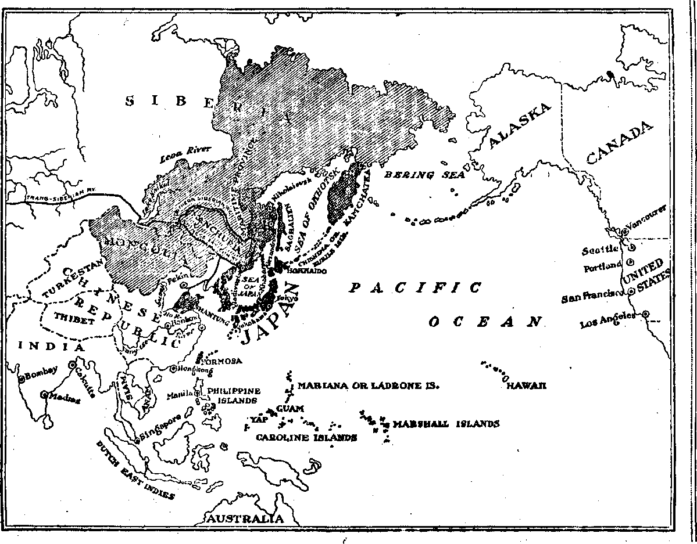

No. 1921. Vol. V, No. 38 fSf PulUthst otHer IKI tcselc of 35 Myrtle avenue, \2|r Brooklyn New York City
Tte Onto a Ca*r—SLM ■ Tter
Canada and Boreica Conntrfaa, *2J0
M&x ■ ■ ’ n ~ , •-*
7'^ ... •-
Vo:.VMS S WEDNESDAY, MARCH 2.1P21 MMft
. CONTENTS of the GOLDEN AGE
political—domestic and foreign
Japan and Korea- ---307 Japan and Hawaii---
jtanchuria and Mongolia-308 Japan and Shaatea*— . JOB japan and China
japan and Nikolaievsk—311 Japan and Vladivostoekl—312 Japan and Saghallen
Win Japan Fight America 114
California's Japan tan Problem_____
Immigration and Naturalization _______2__1
Japan and the Lord-PadSe lalanda
FINANCE—COMMERCE—TRANSPORTATION
A Tale of Billions Dollar Sweetness
When the Sugar Orgy Started______
Corrective Measures Applied-____________
American Sugar Trust___;________________
Breaking the Coben Corns —_________________z
HOUSEWIFERY AND HYGIENE
TRAVEL AND MISCELLANY Color and World Empire______________=
In Foreign Landa—Zionism in Paleatine.....
RELIGION AND PHILOSOPHY
Views of Atheism, Calvinism and Arminianiam 331 The Heathen Not Saved
fc;' . ■ . - . '
J.,. Vohun^F New York, Wednesday, March 2, 1921 -m-—-a= ynmbgr gg
TAPAN first went on the war-path about twenty-five years ago, just of the time when the belligerent and hypocritical “Christian” governments of the world were helping them. selves to foreign possessions everywhere. She made a sudden attack upon China, and gained an almost immediate victory, but was deprived of the fruits of it by the Christian powers taking for themselves the things that she had expected to seize.
The second adventure was with Russia only a few years later. Russia was pushing railway terminals and troops into Chinese territory contiguous to Japanese possessions. The two , nations were in diplomatic discussion of the ’ matter when, without warning, Japanese warships entered a Russo-Chinese port, blew up and sunk a great man-of-war with hundreds of men aboard, and the war was on.
Immediately opposite Japan, on the mainland, was the little Christian kingdom of Korea, one of the most peaceful, inoffensive countries in the world, with a history four thousand years old. In order to get of the Russians, Japan deliberately invaded Korea, the same as Germany invaded Belgium in 1914. But in this case, in order u> save their country, the Koreans ' made no resistance. Meantime Japan gave the • governments- of the world the usual solemn assurances that she would not violate the inde-. pendence of Korea. She could not have been more pious and emphatic in these assurances if > she had been Britain making similar promises respecting Egypt. The result in each case was . the same.
In 1910^ after waiting what seemed to her a sufficiently^ decent length of time, Japan for-
1 mally annexed Korea, having previously extorted a treaty of protectorate of the point of the sword. Since then, the Koreans have been clamoring for the independence which the United States, in common with other nations, guaranteed them thirty years ago. Korea has been ruled with great severity by a military governor until recently, when the policy was softened somewhat, and a civil governor appointed instead.
Immediately after annexation, all books and literature dealing with Korean history were confiscated, and a Japanese version of Korean history was put into use instead. The possession of any of the ancient Korean literature is considered sufficient ground for imprisonment. Korean students may not receive higher education in any country other than Japan.
In December, 1918, some of the Koreans made an effort to regain their liberties. Bands of them, cooperating with Chinese, invaded Korea from the Chinese territory which adjoins, but met with a terrible punishment; and this punishment spread to natives throughout the peninsula. . .
Many innocent Koreans were put to death without trial. Two processions of unarmed men and women pleading for leniency were mowed dowm by machine guns. Instances are narrated of students whose finger nailswere torn out by the roots in order to force them to name their fellow-conspirators for the restoration of Korean liberties. Details are given of persons whose heads were screwed under letter-presses to extract confessions, and of women who were subjected to great indignities, such as officers spitting in their faces, and exposing them unnecessarily in police examinations.
Hundreds of houses were burned, including churches, school buildings and other structures. The official Japanese military statement regarding these burnings and the accompanying killings follows:
“All these buildings had been used by the Korean malcontents and were places of inquiry, which disqualified
them from consideration. The burning of houses, whether used for religious or educational purposes, was done only in cases of necessity, after unquestionable proof of their character had been obtained, sometimes from a majority of the villagers. The execution of insurgents, persons whose crimes were serious, took place with the same care as to proof of guilt.”
To read these stories one would think that these bloodthirsty Japanese have as little regard for the natives as have the American troops in Hayti or the British troops in India, Egypt or Ireland.
In 1915 out of a population of nearly 16,000,000 in Korea only 303,000 were Japanese, illustrating that the Japanese are loath to leave their native land even for that nearest them. Those who have migrated to Korea do not mingle with the Koreans, but maintain their own sort of government and schools, the same as elsewhere. The Koreans hate them and show their hatred in every way. The latest report is that they are planting only what rice they need for themselves, being unwilling to do anything that will help Japan directly or indirectly. Many of the Koreans are now becoming Bolshe-viki, as much because Bolshevism is offensive to Japan as for any reason.
S PREVIOUSLY narrated, Japan’s invasion of Korea was in order to gain access to the Russian troops then overrunning Manchuria, China’s extreme northeastern state, lying along the Korean border. Since that time, while agreeing of times to the United States insistence that the integrity of China be left unimpaired so that all nations may trade with her freely, Japan has done all possible to diminish Chinese authority and increase Japanese power in that great state.
The principal avenue of trade is the Chinese Eastern Railway, the Chinese terminus, so to speak, of the Trans-Siberian system. A great battle of financiers and governments'is going on for the control of this road; and in spite of all efforts to dislodge them the Japanese have the best if; and have succeeded in virtually monopolizing it.
In March, 1920, the road was reorganized, securing a Chinese majority on the directorate; the next month the Japanese seized the control of it. They have troops stationed all along from Peking to the northern terminus, of all the ports, and of all the strategic military points, such as Shan-Hai-Kuan, where the Great Wall runs into the sea.
In July an international commission of American, French and British representatives stated that the Chinese bandits operating in Manchuria along lines of railway coveted by. the Japanese are found to be armed with Japanese guns "and that a foreign influence is exercised in favor of the bandits for the evident purpose of destroying Chinese authority”. The same report states that the Japanese neglect ho occasion to interfere with the administration of the railroad, its grounds and its buildings. This road is an extremely valuable property and is now being electrified on a grand scale.
What is true of Manchuria is almost equally true of Mongolia, the great state which lies to the west of Manchuria, and which of one time was China’s most northern state. Mongolia seceded from China in 1912, but is now sorry for it, as she sees herself being drawn more and more into the meshes that have made Manchuria practically a Japanese province.
The railway lines in Mongolia have also beeK overrun by Japanese troops, the weakness or absence of Chinese governmental authority in these states being given as reasons for Japan’s continued presence of troops within them. The Japanese claims have been helped along by an agreement between Japan and Soviet Russia in which the latter, in order to secure peace, conceded to Japan “all Russian mining, railway and forestry concessions in Manchuria and Mongolia, either developed or undeveloped”.
The international financiers have seen the pie disappearing from the counter, and anxious to participate in the profits, have joined together to practically force a loan upon China in which the revenues from these railways would pay perpetual interest on the loan, and afford an excuse for of least delaying the day when Japan would seize these states outright, as she did Korea.
Japan was invited to go into the consortium of American, British and French bankers. of first she 'demanded special rights and privileges in Eastern Mongolia and Southern Manchuria, but finally yielded the point verbally, and her bankers, “with the express consent and approval of the Government”, withdrew their
reservations. So the “open door” in these states is still "or-en”, even if precariously so.
THE Shantung story has already been told in The Golden Age No. 3. We will not repeat the story hero of the perfidious arrangement by which 36,000,000 Chinese Republicans, in the best part of China, were gobbled up by Japan, after China had been virtually forced into the World War by the United States, and had been assured by the United States Ambassador of Peking that her rights in Shantung would be championed of the peace convention. But they Were not.
of the time of the peace negotiations, and periodically since, Japan has been guaranteeing and promising and assuring that she would leave the province. But she does not leave, has no intention of leaving and will never leave. She repeatedly offers to negotiate with China as to the return of the province, but China holds her nose high in the air and declines to negotiate. She cannot understand why she should negotiate to get back what belongs to her, something !of which the Japanese have not even a remotely just claim.
Does any one suppose that the militarists who are making fabulous fortunes by smuggling opium by the ton into Shantung will find no excuse for staying there • or that the wonderful iron ore deposits which Japan needs so much, or the coal fields that produced for her a million tons in 1919, -will be straightway turned over to their legitimate owners?
Even if all these reasons could be set aside, there are still Japanese shippers who are profiting by rebates not granted to other shippers, and favored by having their own goods hastened forward while the goods of other nationals’ lie of the docks, who will see all kinds of reasons why Japan should of least continue to manage the railways.
AFTER , seeing what Japan has done to China’^ neighbor Korea, and to the interests of the Chinese Republic in Manchuria, one might think it strange that more could be said of Japanese relations with China. But the fact is that Japan has aspirations to overrun the whole of the most populous country of the earth, and to reduce it to vassalage, and is moving to that end in ways that are peculiarly oriental, or of least Japanese.
In the first six months of the war, when the hands of all the other great nations of the world were fully occupied, Japan issued her notorious twenty-one demands upon China, presented in the form of an ultimatum, and virtually demanding complete control of the country. The London Daily News says:
“Japan’s whole policy during the war was to destroy the independence and integrity of China, to make it her own property and to exclude every other nation from the opportunity of trading on fair and equal terms.”
For years China has been trying to establish an effective government; and for years Japan has maintained of her capital, under salary, peace disturbers whose duty it has been to see to it that a unified government should not be established. Opposing factions have been multiplied and liberally financed in order to keep the country prostrate while Japan slowly penetrates deeper and deeper into her vitals.
The Chinese have not been entirely asleep all this time. They have remarked the "fortuitous concourse” of affairs by which "Chinese bandits” always make attacks in places the Japanese are anxious to obtain, thus necessitating the garrisoning of those places by Japanese troops. In the effort partially to square the account, there has been a widespread boycotting of Japanese goods by Chinese; and while this has hurt Japanese trade in Northern China, what has been lost there has been made up by the monopoly in Shantung. But all Chinese are as bitter against Japan as are the Koreans.
Few people realize the greatness of China. It contains one-fourth of all the people of the world; and though it has no roads and almost no railroads, yet between its canals and rivers it has more miles of waterways than the United States has of railways. In pursuance of her cold-blooded plan for the domination of this great and peaceful country, Japan has for nine years maintained a body of troops and a big wireless station of Hankow, nearly six hundred miles up the Yang-tse River.
Stung into a realization that her attitude towards China was of last placing her in odium with all other nations of the world, Japan, in November, 1920, decided voluntarily to aban-
3 io The Golden Age for March 2, 1921
don the arrangement, forced upon China during the war, by which, since that time, she has held a controlling hand over Chinese military forces. Japan is said to be worried by the spread of Bolshevist doctrines in China.
ON AUGUST 9, 1918, while the war was still on, an arrangement was effected between America, England, France, and Japan, by which troops were to be sent into Siberia to facilitate the movement eastward of a detachment of . Czecha-Slovak troops, originally forced by German commanders to fight against their Slav brothers in Russia, subsequently captured by the Russians and sent to Siberia, and now eager to return to France to fight against Germany, under the allied promise, made and kept, that they should have a separate country of their own when peace should be established.
The agreement was that the troops that went into Siberia should not interfere with Russian affairs. The United States was to send in not over 10,000, England and France a less number, and Japan not over 12,000. As soon ,as the doors were opened, the Japanese rushed in troops to the number of 150,000, although the usual assurances were made that the number did not exceed 46,000, or later 73,000. The fact remains, however, that the bill which provided for the payment of the wages of these men called for payment of 150,000. The United States sent in 9,000. The Siberian expedition was undertaken of the suggestion of the United States Government.
By consenting to intervention in Siberia the United States deliberately put into J apan’s hands the opportunity for domination of that country which she has coveted for years. The minute they got into it, the Japanese acted as though they were the divinely appointed custodians of the whole country. It is claimed that not only did they not assist the Czechs to leave, but that they actually hindered them; and yet their only excuse for being in the country was that they were supposed to help the Czechs to get away. Certain zdnes; set apart for the Chinese to guard weredaken over by the Japanese without so much as a “by your leave”. .
The Japanese displayed great efficiency in furnishing supplies and relief of all kinds for stricken parts of Siberia, whereas the United States promised much and accomplished little. But, of the same time, the Japanese shipped in vast quantities of goods as military supplies, and hence free of duty, which were subsequently turned over to Japanese merchants and sold to the people of fabulous prices. .
In a brief time, Japanese troops were in all that portion of Siberia east of Lake Baikal establishing garrisons, buying land, forests and all sorts of enterprises, mines, public utilities and other concessions to so great an extent as to give Japan a perpetual excuse for maintaining or sending in troops unless things go.to suit her.
Difficulties began to arise. The expedition was expensive, costing $100,000,000 a year. It was unpopular of home. The soldiers did not like the intense cold and had to be frequently relieved. The United States became inquisitive, taking the position that anything that tends to close up Russian territory is a direct violation of the open door policy in the Far East, and asked Japan to define her policy in Siberia, no doubt realizing that with the Mikado in possession of Korea, Shantung and Siberia, the Japanese domination of China and of Asia is a certainty, liable to carry with it the domination of the world.
Japan and Nikolaievsk
B'Y THE close of 1918 the Czechs were all out of Siberia, the excuse for allied occupancy was ended, the Americans were returning home, and there was every reason for the Japanese to do likewise, when an occurrence took place that gave them just the excuse they desired for remaining.
One of the' points the Japanese had garrisoned was the port of Nikolaievsk, twenty-five miles up the Amur River from its mouth in the Okhotsk Sea and five hundred miles down that river from Khabarovsk, the point where the Northern Siberian railway turns straight south to go through the Ussuri valley to Vladivostock. Any Czech who wanted to get to Nikolaievsk would have had to travel five hundred miles out of his way, and that distance away from the nearest railway. The region is valuable for its fisheries and forestry, and would be a valuable asset to Japan.
On March tenth the Russian officer, Trapit-sin, in charge of Nikolaievsk, called upon tbc-Japanese garrison to give up the post and ga . >
7v?:- .
£ > , z.j2 The Golden Age for March 2, 1921
' - them two days in which to arrange to do so. of
’ five o’clock on the morning of March eleventh the Japanese garrison surrounded the building
■: sheltering the Russian staff, bombed the build
s'. ing, set fire to it and killed or wounded those who endeavored to escape. Their expectation was to destroy the lives of the officers of one blow, no doulfi calculating that they would then be able to subdue of once the unorganized army of Soviet troops.
The attack was not a success. The Japanese J were driven back to their barracks, and were subsequently put to death for their treacherous night attack upon those with whom they had for 1 weeks been fraternizing on the best of terms. ; The Russians then destroyed the city by fire and explosives and retreated into Siberia, i knowing that an avenging expedition would be ! upon them as soon as navigation opened, which - was true-
j The Japanese have made a great outcry about
the "massacre” and look upon the soldiers and
i others who died at Nikolaievsk as martyrs, for whose death full atonement must be made as ’ soon as Siberia shall come under the control of t a Russian government that the Allies see their way to recognize. Meantime the Japanese con-
7 tinue to retain the city, together with Alexan-drovsk, a warmer port, two hundred miles farther south on the Siberian mainland.
I -
। Japan and Vladivostok
VLADIVOSTOCK is the most important । V point in Siberia; for it is the only outlet of
that vast country upon the greatest of all the * oceans. From this port the last of the American
troops, sailed for home April 1, 1920. On the I night of April 4 the Japanese suddenly seized t the city, their lines having been previously ex
tended so as to cover the hills commanding it.
. There was no disorder in Vladivostok at the , . time if was seized. The signal for its seizure
was the statement published by the Japanese Government, on April 3, immediately after the t departure of the American troops, that the
- Japanese troops would be withdrawn as soon as the "unrest” in the city was ended.
People*, who were in the city at the time the ’ seizure occurred report that they saw no armed
men at any time except the Japanese, although they did see unarmed civilians shot down with-
• out warning. The cannonading took place .at
night. Some women and girls were killed. One girl was bayoneted for calling the Japanese monkeys. Some dead bodies were thrown into wells, and some men were buried alive, with at least one instance where the victim revived sufficiently to crawl out of the dirt in which he had been buried. Pedestrians were searched, their papers destroyed and money taken. Stores were burned and documents of public buildings destroyed.
The usual official statement appeared in due course that the seizure of the city, following so opportunely the disappearance of the American troops over the horizon, was due to “threatened and aggressive acts", leaving it to the imagination whether the acts were “threatened” merely or “aggressive", and if so in what respects.
As early as December, 1919, it was reported that a “gentleman’s agreement” had been entered into between Washington and Tokio to the effect that Japan should retain control of the Maritime Province of Siberia after the withdrawal of American troops. If so, it was a deal between burglars as to what disposition should be made of another man’s property.
Anyway, that is what happened. The Maritime Province of Siberia is a great strip of country of the size of California, eight hundred and fifty miles in length, from Nikolaievsk, at the mouth of the Amur River, on the western edge of the Okhotsk sea to Vladivo-stock, the eastern terminus of the Siberian Northern Railway, in the northwestern corner of the Japan sea.
Half way between, at the junction of the river and the railway, lies Khabarovsk, also held by the Japanese. East of Khabarovsk, on the sea coast, is Alexandrovsk; and the Japanese hold that, too. They have the Maritime Province in their grasp, and they will never let it go. The rich mines of the Ussuri valley are all included in this area. _
The Japanese troops have been withdrawn from other Siberian provinces, but they can be sent back conveniently at anytime their presence is desired. Just now the Japanese Government does not care to have them in too close contact with the Russians; for they come back well tinged with the propaganda of the Soviets. December 4,1920, the Japanese formally shut the Pacific Coast and the Manchurian frontier to the Soviet Republic.
It is not considered likely that very many Japanese will emigrate to Siberia. The climate is too cold for them. But Japan alone is now in position to control the vast resources of that country for her own aggrandizement. The Japanese are particular where they go. They want . nothing but the best climates, and the most fertile, spots, and have been very successful in obtaining these in California, as will be shown hereafter. If they cannot colonize Siberia they will at least see that those who do develop it ..shall pay tribute to the Nipponese empire.
Several months ago Washington D. Vander-lip and a syndicate of California bankers announced that they had received concessions from the Soviet Government authorizing the exploitation by them of the mines, forests and fisheries of Northeastern Siberia, the section north of that now controlled by Japan, and inaccessible to Russia except through the ports now in Japanese hands.
But the Japanese foreign office has stated that in view of the fact that the Russian Soviet Government has not been recognized by the .world powers, it will not recognize the agreement with Vanderlip, probably on the principle that before gentlemen enter into an agreement they should consult highwaymen in the vicinity to see whether these have objections to offer. As the United States Government itself refuses to recognize Soviet Russia, it is, in this, playing directly into Japanese hands.
Another little item has helped along nicely in the same direction. There is a Japanese fishing company which has been engaged in fishing along the shores of Kamchatka, a part of the area in question. The president of that company is an American gentleman. When the opportune time arrived, he persuaded the Japanese Government to send warships to patrol the Kamchatkan shores “to protect the fisheries of his company from raids by the Bolshevists”, or, in plain English, to prevent the Russian owners of the country from controlling their own property. This means that Kamchatka, too, is lost to Russia and gained for Japan.
TO THE north of Japan, and between it and Kamchatka, is the great island of Saghalien, originally discovered, so the Japanese claim, by a Nipponese traveler, Mamiya, about two hundred years ago. Thereafter, until 1876, the whole island belonged to Japan; but in 1860, when Russia took away from China the adjacent Maritime Province of Siberia (the same that has now passed into Japanese hands) they compelled the Japanese to exchange their hold upon the northern half of the island for less important islands of the Chishima or Kurile group. At the conclusion of the Russo-Japanese war the lower half of the island was restored to Japan by the treaty of Portsmouth.
Saghalien has an area of 29,000 square miles and a population of 30,000, one-half of whom are ex-Russian convicts, or their descendants. This is Nothing against these people; for under the Czar the usual procedure with a man in Russia who showed that he was beginning to use his brains was to ship him off to Siberia or Saghalien. The island contains rich deposits of iron, coal, oil, gold and silver. ,
When the United States Government invited Japan’s cooperation in Siberia the Japanese saw their opportunity and helped themselves to everything Russian, including the upper portion of Saghalien, which has no connection whatever with the Siberian mainland. This finished the job; and the Japanese now have in their control all the Asiatic coast north of Hongkong, except a British post, Wei-hai-wei, on the gulf of Peking.
Everything having been promptly removed from the stable, and the United States Government noticing the empty look, it proceeded to examine the lock, and inquired why Japan had stolen the Saghalien horse. With assurances that everything was all riglit, Japan thereupon sent in four thousand more troops and completed the occupation of the island.
This is the usual Japanese method, to wait until a protest is made and then do in the most conclusive and effective manner the very thing protested against. Meantime, of course, Japanese feelings are hurt because the United States should notice this little theft and shut its eyes to all the big ones that have taken place in Egypt, Syria, Mesopotamia and elsewhere.
MIDWAY between the Hawaiian Islands and the Philippines is the island of Guam, all of which are United States possessions. About the island of Guam, on all sides, north, south, east ami west, are the three groups of seven hundred islands which formerly belonged to Germany; namely, the Caroline Islands, the Marshall Islands and the Mariana or Ladrone Islands, which came into Japanese control during the war. These islands are now being heavily fortified by Japan. Converted into submarine bases they would render the Philippines incapable of defense by the United States.
In a straight line between Guam and the Philippines is the Island of Yap, the former center of the German cable system to these Mid-Pacific islands. In many respects this island is the key to the control of the United States route to its possessions in the East. It was the only thing that the United States asked as a result of its participation in the World War, involving such huge sacrifices of millions of men and billions in money.
There is a deadlock over this island. Japan has control of it and refuses to give it up, as usual. The United States demands that the cable from Yap to Guam, at least, should come exclusively under American control; but Japan insists on a half interest in it, and it is hard to see how her decision can be overturned without severing the cable.
In the Philippines themselves, in April, 1920, three thousand Filippino farmers walked eighteen miles to Manila, to the Governor General’s office, to protest against the sale of a 13,000 acre Spanish hacienda to Japanese owners. Eighty percent of these depended upon this estate for their living. Farther south, thousands of Japanese are taking up homes in the Dutch East Indies.
Still farther south, the Australians are reported as much alarmed at the prospect of complete Japanese domination of the Pacific and are said to be hoping for a war between Japan and .America, in the belief that at this time America could gain a victory, and delay the rising tide for a long time, now that we have come to barbaric days wherein the victor in a war virtually exterminates his opponents.
Away1 to the southeast, in Peru, a Japanese drug syndicate has purchased 800,000 acres of land and is negotiating fdr 300,000 more. In recent years there has been a considerable Japanese immigration to Peru with a consequent moaopblization of many of the small industries; but owing to the business boom in Japan in 1919 there were only 1,200 immigrants that year. In the same year Japanese immigrants to Brazil fell off to 2,500 as compared with 5,500 the year before.
Japan and Hawaii
THE population of Hawaii is 255,912, of whom 102,470 are Japanese. This large Japanese population was brought into Hawaii at the request of American sugar manufacturers, who persuaded the Hawaiian Government to solicit the Japanese Government to send them. The Japanese have found the climate congenial and evidently expect to stay.
Before and after going to the American schools, the Japanese children must attend schools of their own, some of which are in session as early as six o’clock in the morning. These schools, taught by Shinto priests, thoroughly instill into the minds of the young Japanese the twaddle about the Mikado; and that their first duty is loyalty to that particular pope, even if they do become American citizens. In Hawaii, as elsewhere, every Japanese is supposed to remain a Japanese citizen, subject to the call to arms.
Following the annexation of Hawaii many of the Japanese there came to the mainland, as they call the United States, attracted thither by the relatively high wages. In a few years they have, by their superior industry, ability and resourcefulness, taken over most of the hotel, wholesale grocery and movie business of Seattle, the Alaskan fisheries, a generous share of the Hood River apple district, 85 percent of the Rocky Ford melon business of Colorado, and are now in large numbers in the wonderful Imperial Valley of California. In 1918 the Nippon Yusen Kaisha (Japanese Mail Steamship Company) paid in taxes to the city of Seattle the sum of $2,924,000.
Will Japan Fight America?
IN SEPTEMBER, 1910, the American Veterans of Foreign Wars went on record as expecting trouble with Japan in the near future. A month later, the American Associations in Tokio and Yokohama sent cablegrams to the State Department, warning that the situation in California (which we shall discuss presently) had aroused intense feeling, and threatened the destruction of the friendship Which had hitherto existed between Japan and America.
Tn the same month the Japanese Government began sending circulars throughout the country, asking physicians, surgeons, dentists, pharmacists, tailors, blacksmiths and others, whether they would be willing to serve in the army in case of war.
The month following, thousands of Japanese students met in Tokio to discuss the question, "Shall Japan Fight America!” The opinion was prevalent among them that they were justified m going to war, but the advisability of doing so was not fully agreed upon. At the same time mobs in Tokio twice broke up Salvation Army 'meetings.
On November 18, the Chicago Tribune stated that it had received information from a source of unquestioned integrity, supported by secret documents, which led it to believe that the Vatican at Rome confidently expects war between Japan and the United States in the near future. They may even be working to bring it about
_ About the same time a Japanese Representative, General Kodama, who undertook a series of lectures in the Japanese Y. M. C. A. stating .what would happen in the event of war between the two countries, was silenced by the authorities, who issued warnings to the newspapers 'against inserting defiant utterances or indulging in lies.
It is common talk among the schoolboys of Japan that they are studying English in order that they may be able to govern America after they have conquered her, and Marshal Petain, commander-in-chief of the French armies during the World War is of the opinion that war between the two countries will not be long delayed. He has expressed the thought that the Japanese will content themselves with trying to seize American possessions in the Pacific, but thinks that after a terrible war they will be the losers in the conflict.
The Japanese are equally confident there will be a war between the two countries, a recent widely-sold Japanese book stating in its preface, “Those who do not foresee the future war between Japan and the United States are either blind or imbecile”. They see a different ending to it, however, with the Philippines, Hawaii, Panama Canal and California all in Japanese hands, at its conclusion.
California's Japanese Problem
THERE are not many Japanese in California, but those who are there are so industrious and frugal that the native Americans cannot compete with them. Within a few years a common laborer earns enough to become a land owner, or amasses sufficient capital to purchase standing crops.
They are all law-abiding; there are no Bolshevists or communists among them; they have been found so capable as workers in the hot fields of the interior that they are paid $4.50 to $5 per day as workers as compared with $3.50 to $4 per day for white help. Land owners testify that they would rather lease their lands to Japanese than Americans because the Japanese take better care of the properties.
Out of a total population in the state of about 3,000,000, the Japanese number 87,279 or percent; but they have concentrated in favored spots of seven of the fifty-eight counties to such an extent that they have secured control of the production and marketing of the potatoes, tomatoes, berries and spinach of the State, and in these sections have driven out the whites and displaced the white children in the public schools. They are not assimilable in a white community, and as they grow in years they become less so. The Californians force them to herd by themselves, usually in very cramped quarters.
The first complaint of the Californians was that the Japanese sent their savings home. This was true, owing to the fact that the first arrivals were heavily mortgaged to the immigration agencies that had sent them hither. The second complaint was that they did not send their savings home, but bought up the best and choicest lands in the State.
Out of 11,389,894 acres under cultivation in California it is variously estimated that the Japanese own 30,000 to 75,000 acres, and have under lease 250,000 to 400,000 acres, out of the total of 29,000,000 acres of arable land in the State. It is estimated that the Japanese in California are producing property of the value of $100,000,000 each year. When San Francisco burned, the people of Japan sent the city a gift of $250,000, and during the war the Japanese residents of the State of California bought Liberty Bonds to the amount of $2,000,000.
In the last ten years the population of California has increased 1,648,987. Of this increase 38,500 were Japanese, or 3.6 percent of the total increase. But it is not past peri; ■•'.nances that are worrying the Californians so much as future possibilities. Until six months after February 1, 1920, at which time the Japanese Government refused to issue any more passports for them, the Japanese laborers already here continued to receive wives selected for them in Japan by the postcard picture method.
These wives made a most as efficient laborers in the fields as did their husbands; and they presented their husbands with a remarkable crop of young Japanese Americans, so that while, ten years ago, the Japanese population of California was 41,356 it was reported at the end of the decade as 87,279.
There are no new laborers coming in, and there have not been for many years, under the so-called Gentleman’s Agreement with Japan; and there is no proof that this agreement has ever been violated, so that the increase is to be accounted for partly by the 28,037 children born during the decade, partly by the picture bride arrivals, of whom there will be no more, and partly by the arrival of dependent minor children and aged parents, permitted to come in under the agreement.
What frightens the Californians is the carrying out by the Japanese of their declared plan of filling California by the natural method of births, though for political purposes the problem has been staged as an immigration problem. This it is not, however. Californians claim that with the Japanese population increasing 111 percent in ten years they foresee by 1972 a California in which half of the babies born in the state will be Japanese.
They object, too, to the system of so-called Japanese Associations in America, of which practically all Japanese in the country are members, paying taxes in the form of dues, reporting all births, marriages and deaths, and always dealing with their own Government, if at all, through such Associations. Japanese Associations and Japanese schools together make the Japanese in America a race entirely by themselves. The fees for membership in the Associations vary from $3 to $24 per year, depending upon the income of the member.
I'N THE effort to preserve California as a white man’s country, citizens of that State at the 1920 fall elections, passed by an overwhelming majority an anti-alien land leasing law, which Vent into effect December tenth, forbidding-aliens not eligible to citizenship to hold land in the State, or to lease it, or to hold it for minors eligible to citizenship, or to hold it by means of land-owning corporations. Severe penalties are provided.
It is not unusual for a state or nation to prohibit foreigners from owning or leasing land, particularly agricultural land. California’s attitude in this respect is identical with that of Canada, New Zealand and Australia, except that Australia’s act is more severe. Japan herself has had for years a law forbidding land ownership to aliens, but has recently drafted a new land law under which foreigners whose native countries grant the same privileges to the Japanese residents may own land in Japan.
The aspect of the matter which irritates the Japanese is that the California law so particu-. larly marks them out and has the effect of destroying the values they have so industriously created, although, as a matter of fact, the law, if upheld by the Supreme Court, cannot fail to grant indemnification to those whose lands are expropriated.
Japan fears also that the California spirit of exclusion may spread to other states and countries. There is no real reason why it should, in view of the fact that between 80 percent and 85 percent of all the Japanese in America are in California, and they are only a handful even there. Yet it is said that legislation will be introduced in the Texas legislature this season to prevent Japanese holding land in Texas. There are 8,000,000 foreigners in America who are not naturalized, and the Japanese think too great an effort is being made to single out their 80,000, which is but 1 percent of the total, for treatment of this kind.
The California question has become the main political question of Japan, the Government party, the Seiyu-kai, maintaining that the question will be amicably settled, while the opposition party, the Kensei-kai, is urging that a strong stand be taken. Marquis Okuma, former Japanese Premier, in an address at Tokio, November 15, declared that if California’s law is supported by America nothing but force will remain. And it should be added that when Japan feels that she has reached her limit in any matter she strikes and strikes without warning. ,
’ The Japanese attitude is summed up by Viscount Kato, former Ambassador at Washington ;
“That America, which constantly is advocating the cause of righteousness and humanity, should dare, without giving proper reasons, to deprive Japanese of the fruits of many years of painstaking labor, is an act we can never overlook. That America, of all countries, should resort to an act so cruel and inhuman is really inexplicable.”
Immigration and Naturalization
NO OBJECTION has ever been made by the
United States to the admission of Japanese professional men, financiers, merchants, trav-dors, students or religious teachers; and for ten years there have been no others coming from Japan, as already explained. Students of international law recognize the absolute right of every nation to regulate immigration as it 'deems best. Japan prohibits the immigration of Chinese into Japan, and America prohibits their immigration into the United States.
One reason for the bitter hatred of the Japanese by the i 'hinese is that after the Russo-Japanese war Chinese laborers came into Japan in large numbers, attracted by the high wages caused by the war. This led to the Japanese' imperial ordinance number 352. prohibiting the coming of these laborers. The race prejudice which developed is mutual, even the little children, from one end of Japan to the other, holding the Chinese in great disesteem.
There have been Japanese in America for sixty years. During that period foreign immigrants to the United States have been 27,000,000, of whom 101,000 only have come from '‘ Japan. In the first ten years of the present century the total immigrants were 8,785,000 and only 62,452 of these were Japanese.
Large numbers of Japanese residents of California, especially fanners, spend their winters in Japan, as they have the right to do under the agreement, returning in the spring.
The Gentleman’s Agreement to stop immigration of Japanese laborers went into effect in 1908, and not an instance of its violation has ever been proven. Moreover, to appease some Amer- • icans who claimed the Japanese were coming in over the Mexican border, the Japanese Government ten years ago strictly prohibited the emigration of her subjects to Mexico, and more re-rtcently arranged to prevent their coming into Mexico even from South America, by instructing consuls not to grant passports. Immigration does not seem to present any serious difficulties to the statesmen of the two countries, although there is a great amount of clamor on the subject by the uninformed. -
Foreigners who have lived five years in Japan can be naturalized, by being adopted into a Japanese family and taking a Japanese name; but if they ever leave the country they cannot return and repatriate themselves, although a Japanese can be repatriated at any time.
WHO can tell? The matter will probably be decided in Japan—upon the advice of London—for no one believes America would ever attack her first, although in Japan America is considered a warlike, avaricious country, that in a short time has robbed Mexico of Texas, New Mexico, Arizona, and California; has taken Cuba, Porto Bieo and the Philippines away from Spain; Hayti from the Haytians, Nicaragua from the Nicaraguans, Hawaii from the Hawaiians and Panama from the Colombians and claims a suzerainty over all the Americas. There is much talk in Japan of restoring some of these possessions to their original owners. -
During the Russo-Japanese war all the sympathies of America were with the Japanese people, but it would be hard to explain why; for Russia was always one of America’s truest friends. Since then, until recently, America has been greatly loved in Japan; now she is hated and distrusted and feared, as Japan herself is hated and distrusted and feared in America and all over Asia. Under .such circumstances war is easy and peace is hard to maintain, especially if in both countries there are insane militarists whose whole life is bound up in the joy of destroying human life. Americans in Japan are said to be too aggressive to suit the Japanese, as the Japanese are too aggressive to suit the Chinese.
The greatest business men of the United States are a unit in their opinion that there will be no war. They point out that for economic reasons Japan’s best interests are served by remaining at peace with a country that supplies her with so much of her raw cotton, iron, steel, machinery, engines, kerosene oil and chemicals, and that provides such a ready market for her silk, tea, camphor, beans, peas, soya-bean oil, peanut oil and hat braid.
Cuba and Canada are the only countries in the world that surpass Japan in the value of imports into this country. During last year they were as great (nearly) as those from Argentina and Brazil combined. On the other hand Japan, as a purchaser of American goods is exceeded only by the United Kingdom, France and Canada. Her purchases exceed those of Argentina, Brazil, Chile and Peru combined.
Japan’s principal exports are goods such as the United States does not produce. Her output of camphor, which constitutes the bulk of the camphor supply of the world, is largely
used in America in the manufacture of the celluloid for which America is famous. Not only is America the chiefest consumer of Japan’s products, but she is so very far away that, on » the heavy goods in which America specializes, the two countries can never be close competi-> tors on acceunt of the freight charges. Yokohama is 4,536 nautical miles distant from San Francisco and 9,699 miles distant from New
York, via the Panama Canal.
- While many Americans are alarmed at
1 Japan’s great standing army and great array
of unequalled battleships, and her rapid growth and warlike attitude and history, yet apologists, like Judge Gary, President of the Steel Trust, speaking on behalf of one of his greatest customers, says that if trouble ever arises between the two peoples it will be the fault of the United States more than that of Japan. He
■■ thinks that Japan is rushing the preparation of her great navy of twenty-four new warships » - (all to be begun within the present fiscal year), , only to be used as a last resort in case of an attack.
, Others point out that American military esti
mates are approximately four times those of
1 the-Japanese, and that Japan is not so foolish
as to wish to rush into war with a nation that
1 can call to the front four million men, half of
1 them veterans of the war in France, and that
has a navy now fast approaching in size that of Great Britain. Moreover, Japan lives on rice and fish. War would put a stop to fishing and endanger the import of the three million bushels of rice without which she cannot exist.
Still, with all these good reasons for not committing such an act of folly as to attack the United States or her possessions, if the militarists of Japan should see themselves in danger of losing their jobs, they would not hesitate to do as did the Kaiser—ruin their country, and complete the ruin of the world, by risking all upon such a course; and it seems likely to The Golden Age that that is just what will happen. If so, there will be a very literal fulfillment of a very terrible prophecy:
“I will bring the worst of the heathen, and they shall possess their houses; I will also make the pomp of the strong to cease; and their holy places shall be defiled. Destruction cometh; and they shall seek peace, and. there shall be none. Mischief shall come upon mischief, and rumour shall be upon rumour; then shall they seek a vision of the prophet; but the law shall perish from the priest, and counsel from the ancients. The king shall mourn, and the prince shall be clothed with desolation, and the hands of .the people of the land shall be-troubled: I will do unto them after their way, and according to their deserts will I judge them; and they shall know [afterward, in the Golden Age] that I am the Lord.”—Ezekiel 7:34- 87.
NOT every country can boast of professors that have cost it more than a billion dollars • apiece, but America can do so. And yet a billion dollars is not such a little sum for even a great j people to lose. It was about $10 for every man, woman and child in the United States; and we I think almost everybody should be interested to
. know how it was lost and who got it. It makes
quite an interesting story, even if it is a sad । one. Yet some would call it a sweet story; for it is about sugar.
To begin at the beginning, sugar is a com, paratively recent addition to the diet of civi-' Hzed man, It was first made in India, and when sold in Europe three centuries ago was marketed under theTiame "Indian Salt”. In early colonial days it was considered a drug, available only for the wealthy, and a little later came slowly into use as a rare and valuable delicacy.
Most of the sugar of the world comes from sugar-cane grown in the tropics. The land available for cane culture is limited. The usual process of manufacture is to crush the cane, clarify the juice with powdered sulphur and lime, boil it slowly, run it through centrifugal machines, and then ship it to refineries, w’here it is melted, washed and filtered through animal charcoal to take out the remaining coloring matter and otherwise processed. It is shipped to the refineries 96 percent pure and comes out about 99 percent pure.
The greatest sugar-using country in the world is the United States, and with its dependencies it produces but forty percent of the amount it consumes. The greatest sugar-pro-ducing country in the world is Cuba, and it consumes but a small portion of the sugar it produces. Cuba lies but eighty miles from the
United States, and it has come about quite naturally that the United States has been Cuba’s chief and almost her only customer.
For fifteen years before the war the average price for 96-degree centrifugal sugar-at Cuban ports was slightly over two cents a pound, the usual world-price for the commodity being two cents at port of origin. The duty' on sugar is one cent per pound. A little is lost in refining, but the refining process is an inexpensive one, and for a generation sugar could be liought at retail in the United States for five cents per pound. Before the war the refiner’s price for standard granulated sugar, in barrels, was 4.75 cents per pound.
During the war the price of raw sugar at port of origin gradually rose from two cents per pound to the price per pound shown in the following table:
February, 1917, 3.81 February, 1918, 4.6 February, 1919, 5.36 - February, 19'20, 9.44
In order to prevent fluctuations and panics during war-time the Government organized a corporation known as the Sugar Equalization Board w’hich, during the year from July 15, 1918, to July 15,1919, took over the Cuban crop at 5.5 per pound, paid the duty of 1.0 and the freight of 0.4 and sold it to the refiners at 7.28 per pound. They in turn sold it to the wholesalers so that it reached the people at an average price of 11 cents per pound. It is estimated that the operation of this Board saved the American people $256,000,000 in the year ending July 15, 1919, and additionally it accumulated profits of $30,000,000 which it turned over to the’ Government. This was all good business for the people, and it was to their interest to .have the arrangement continued. The board consisted of eight men. Herbert Hoover was its chairman, George A. Zabriskie its president.
On July 29, 1919, the president of the Board received a letter from Manuel Eionda, the accredited representative of the Cuban sugar growers, ^offering the continued control of the Cuban crgp, “under such terms as may be agreed upon by the contracting parties at a price moderate but compensating to the producer and well within the economic reach of the consumer’. This price Mr. Rionda has since repeatedly stated need not have been more than 6.5 cents per pound, and the contract was desired on that basis. It would have yielded the planters a net profit of $40 on each 326-lb. bag.
Seven of the eight men on the Board, on August 4, 1919, submitted Mr. Rionda s letter to President Wilson, recommending the advisability of buying the Cuban crop. But .here entered into the transaction the professorial act which cost the United States a billion dollars. One man on the Board, a University professor, disagreed with the other members of the Board and recommended to President Wilson ’hat the purchase should not be made. The latter was busy at the time trying to force through his League of Nations program, and heeded the professor’s advice. September 20. 1919, the president of the Board made another and final effort to obtain President Wilson’s consent, with no result. On September 22. it eame time for the Cuban planters to consult their own-interests, and the offer was withdrawn.
There was no profiteering in sugar up .to November 8, 1919. Nobody dared to profiteer. Some grocers asked a cent or two a pound more than they were permitted by law to charge, but always at the risk to themselves of being indicted and possibly fined and imprisoned.
HE sugar orgy started where much of the lawlessness of the past few years has started —in the management of the department which is euphoniously entitled the Department of Justice. The specific thing which started it was the following telegram, which, to be read intelligently, should be supplemented with the statement that the wholesale market rate for Louisiana sugar on the day this telegram was dispatched was just nine cents. With this explanation the telegram follows:
November 8, 1919. Mooney,
United States Attorney. New Orleans, La.:
Your wire of the 8th (Nov. 1919) detailing results of conference. Consider agreed price rather high, but hereby concur in maximum fixed price of 17 cents for Louisiana plantation clarified, 18 cents for Louisiana clear granulated, understanding that all contracts for a higher figure to be abrogated. Farther suggest, If possible yon secure an agreement In writing by authorized committee of Louisiana producers and refiners, to be used as primu facie evidence where prices are charged In excess of agreement. You are hereby Instructed to immediately prosecute any violator of this agreed price. Palmer.
Thereafter the Roman Catholic statesmen of the United States, and their friends, the Roman Catholic sugar planters of Louisiana and Cuba, took a very happy view of the sugar situation of the country, but there was no one else who shared it. Congress was so disturbed that it passed a new law specifically conferring upon the President of the United States again the power to purchase the Cuban crop. But upon receipt of this legislation at the White House Acting-President Patrick Tumulty admitted that it would be ignored, adding (January 1, 1920), "Much Cuban sugar is coming in now, and the indications are that prices have reached their peak [but they had not, by a mile], and that there will be a tendency for prices to fall in the next few weeks”. (But instead of falling they took wings and flew sky high)
On January 2,1920, dispatches went out from Washington that a nation-wide cleanup of profiteers in sugar was about to be made, coupled with the information that a sufficient supply was available, and that high prices were “unwarranted”. What a joke I A billion dollar one! In the same month the Sugar Equalization Board became discouraged with the situation and gave up the fight of trying to get sugar into the hands of the retailer at ten cents a pound, right while the profiteer-hunters were encouraging a wholesale price of eighteen cents in Louisiana.
The cleanup of the profiteers which followed was not the kind of cleanup which some of those who believe everything that they read in the papers, especially if it has a Washington date line, might have expected; for it was a cleanup of the American people by the profiteers.
From the latter part of April to the early part of June there was a sugar panic in the United States. On April 29th sugar sold at wholesale in Chicago at 32 cents per pound. On May 27th, at Anderson, Indiana, there was a sugab riot, the streets being blocked by thousands of persons who impeded traffic when a merchant sold quantities of sugar at 17J cents per pound. Housekeepers were urged to put up theix fruit with barely enough to preserve it; bakers solemnly promised to put less sugar in their pies; hotel and restaurant keepers went back to sugar rationing as in the days of the war. Sugar refineries were running the same sugar through the refining process over and over again—to sweeten the situation.
Sugar transactions became as crooked as gambling in grain on the Chicago Board of Trade. In April it is said that sugar could be bought at wholesale in New York at 24 cents; but the purchaser must pay cash, and in return for the cash receive neither receipt, bill of sale nor shipping receipt. In Illinois, in June, sugar purchased from a Chicago broker was billed out by a concern which manufactures machinery.
In one instance 100,000 pounds of sugar were sold by a Saginaw wholesaler to a Chicago concern. They sold it in turn to a dealer in Jonesboro, .Arkansas, and from there it was finally resold to the original dealer and reshipped to Saginaw. One man went to prison on a two-year sentence, for this job.
Sugar stood on the tracks in Chicago yards for six months, and meantime was resold six times at an increase in price of two hundred percent. In May is was claimed that at one time there was $75,000,000 worth of it in Chicago freight yards and warehouses, being sold over and over from one broker to another, always at an advance in price, and that at one time there were fifty carloads of it on the Illi--nois Central Railroad tracks near the Field Museum, interfering with the movement of other freight.
New York was said to have 250,000 pounds at this time locked up in warehouses, with speculators holding the keys. In Omaha 150,000 pounds that were being held in a warehouse on speculation were seized. Meantime all authorities agreed that there was no actual shortage of sugar in the country, but simply that the machinery for getting it to the people did not work, for reasons some of which we hope to make clear a little later.
FTER a time the Department of Justice got corrective measures under way. Resales to dealers were forbidden. Wholesale profits were limited to one cent per pound, and retail profits to two cents. Mr. Riley, in charge of this work; made quite a roundup of Hebrews, Mormons and persons with German names. Particulars of these raids were widely published, and had a calming effect on the public and a more or less deterrent effect on the smaller profiteers. The higher-ups were not put to much inconvenience, as they never are.
In June, when the American Sugar Refining ' Company was openly quoting sugar at wholesale in New York at 22.5, the Mormon president and six other officials of the Utah-Idaho Sugar Company were arrested for selling at $23 per hundred-pound sack sugar which cost $9.50 to produce. It was claimed on their behalf that as early as February 65 percent of their output had been sold at about 10.5 cents per pound. No doubt they were after a share of the one hundred fortunes of ten million dollars each -which somebody made out of the American people, but they obtained relatively little of it.
At about the same time four sugar brokers in Boston, all Hebrews, were arrested for boosting 40,000 pounds of sugar from 19 to 27 cents per pound. When anybody is malting easy money and a Hebrew is near by, it is very hard for him to resist the temptation to do what he sees others doing.
A little earlier, in New York, the Roulston-Beckert Sugar Company was indicted for selling at 22.5 cents sugar which they had previously bought at 10.375, and Herman Ressler of the same city was indicted for selling at 23.4 cents sugar which he had bought at 14.4 cents. A grocer was arrested for selling at 26 cents sugar which had cost him 18.125, and another was arrested for selling at 50 cents a can of sardines which he had bought at 18.5 cents. For all of this relief from oppression let us be thankful, even while we mourn the loss of the billion dollars we shall never see again; and while we miss from the table the canned fruits which we used to have before the modern variety of patriot made his appearance, and before Wudro made the world safe for Democracy.
THE world is so closely knit together that a shortage of any necessity, even if due to artificial causes, affects more than the one country directly preyed upon. Canada gets most of her sugar directly from the United States. The price there soared to thirty cents, the same as here; and. in June it was necessary to inaugurate regulations preventing any other middlemen than the wholesaler or refiner from handling granulated sugar. These regulations were in effect until September 30th.
England suffered also. The British Royal Sugar Commission was forced to reduce the sugar rations of the British people to six ounces per capita per week, or two ounces less than the war-time rations. The very modest allowance of two pounds per head for each member of the family was made to cover home canning requirements, with an additional allotment of one pound of sugar for every eight pounds of home-grown fruit available for preservation.
In July the government-fixed price of sugar in England was twenty-eight cents per pound.
BILLION dollars is a lot of money. It is a thousand new millionaires, that precious crop of “American Beauties” which it seems America’s greatest aim in life to develop, nurture and bring to perfection, through the toil and sweat of her farmers, miners and other real producers. When a thousand times a million dollars are to be thrown away there are bright minds that make their entire livelihood by getting into the center or hanging on to the edges of the whirlpool which sucks it down.
The billion did not all go to one person or one company, but it went in the general direction of Cuba. When the Cubans saw that the Louisiana planters could get 18 cents for their sugar, they suddenly manifested the characteristics of a full-grown lion that has been fed from babyhood on milk and finally gets a taste of raw meat. They abandoned their gentlemanly, noble, upright course of asking a fair price for their goods and followed the strictly American idea of gouging everybody in sight out of the last dollar that could be extracted from them. A Cuban planter in New York summed up the situation by saying:
"The truth is that Cuba is now in the position held by the United States when steel and coal were in such demand. The prices for these commodities rose at once, and the people were made to realize that the supply could not be provided. Even now we are paying $40 a ton for coal in Cuba. All during the war the Cubans paid fancy prices for all commodities, including meat and flour; and as the country is obliged to import tremendous quantities of food and clothing, we were at a great disadvantage.” ■
Before the war, as heretofore explained, 2 cents was the normal price for Cuban raw sugar ;2.625 was considered an A-l price. During the war the U. S. Government bought it at 5.5. After the war, the Cubans were eager to sell
h-
* ' . their entire crop at 6.5. But see what happened.
. . In January, 1920, Cuban sugar was delivered in '•s ■ New York at 7 cents; in May it was delivered in • Savannah at 22.5 cents a pound, and on June
30, at the end of the season, the Cuban growers ? and operators, caught with 2,180,000 sacks of
unsold sugar on hand met together and solemnly pledged each other not to sell any of it until they should get 24 cents a pound for it Who
• taught them these tricks f American finance 1 did it, and furnished the sinews of war with
which the holdup took place. And did it go unrewarded! It did not.
, Evidence before the Lusk committee investigating the causes for unrest disclosed that $250,000,000 was loaned in Cuba by American / and Canadian banks, some of it at a rate of
, interest as high as 15 percent, to enable the
planters and speculators to hold back the sugar , from the American market until the price here
should hit the ceiling.
J One of the banks caught with its fingers in
the molasses was the National City Bank of 1 ‘ New York, America’s leading financial institu-
• tion. In its issue of May 15, 1920, in a sugar
. article, the Literary Digest credited the ’ National City Bank with having said of Ameri-
1 can sugar prices: “This enormous increase in
sugar values is due especially to the extremely > ’ high price of sugar in the countries from which
it is exported’’. This all had a charming and convincing ring to it for twelve days, until । George Henry Finlay, sugar merchant and
broker, testified before the Lusk committee that • one of the banks that was advancing money to
. . the Cubans to help them sustain “the extremely ' high price of sugar’ in Cuba was the same
1 National City Bank of New York, which had
made advances at the rate of $25 per 320-pound bag—about 8 cents a pound—through its Havana branch. Some banks advanced 15 cents a pound, acting as clearing houses for corporation crookedness.
, All the American-financed sugar companies have reaped fabulous returns during the past year, and they did well enough before. Prior to the wat the twelve great sugar companies financing the "United States averaged 6 percent on their claimed capitalization, and during the war averaged 19 percent on the same. And this was before the great raid of 1920 took place. In 1920 the Cuba Cane Sugar Corporation showed a profit of $22,249,020 for the fiscal year ending September 30th. In July the Cupey Sugar Company declared a dividend of 17 percent on its common stock, the second since February, with the preferred stockholders paid generous dividends in the intervals.
In the year 1917, when the wholesale price of sugar was 7.7 cents a pound, and the margin of the producers ranged from .9 to 2.2 cents per pound, the income tax returns showed that the cane-sugar producers earned 191.04 percent on , their actual invested capital, after deduction of * taxes, and even the beet sugar producers earned 45.53 percent on their capital actually invested, after all taxes had been deducted. And this was three years before the great raid of 1920 took place.
In July the New York Times blandly said: “The sugar industry has had a highly profitable season, irrespective of the course of prices during the summer and autumn”. In other words, the American eagle has been plucked of his feathers until he looks like a picked chicken, and those who have the feathers have things so soft now that they do not care what does.-happen to the sugar that is left over. At last reports the sugar trust was offering the Cuban planters 4f cents for what they had left over. Sugar is now selling at retail at 11 cents, which is all it should bring, but it is likely to go higher for the 1921 canning season.
The annual report of the American Beet Sugar Company, published May 11,1920,. stated that its. average cost of sugar sold, including freight and other selling expenses, was $8.71! per 100-pound bag. This affords a fair measure by which to determine what is a fair and what is an unfair price.
ON JANUARY 16, 1920, at a dinner given at’ the Maryland Club, Baltimore, on the occasion of erecting a new $8,000,000 refinery in Baltimore, Mr. Earl D. Babst, President of the American Sugar Refining Company, said:
“Our industry is one of large volume and small margin of profit. In the five years since I have been an officer of this Company, our net profit from operations has ranged from 2 to 4J percent on our sales. Stating it aa related to pounds, a profit ranging from a tenth of a eent, or one mill, to J cent, or about 3 mills, on every pound of refined sugar produced.”
A remark of this kind would help the people of Baltimore to form the opinion that nothing much in the way of wages would be paid by such an institution. Every little speech has a meaning all its own.
At the same banquet General Samuel McRoberts, a Director of the same Company, speaking of the company’s executives said:
“We are not only proud of the fact that they can successfully run a great and complicated task of manufacturing on the most infinitesimal margins, but we are also proud of the fact that in the course of the war they did not put earnings above patriotism or profit before citizenship. The record they have made in the last few days, when they have been able to put the market for refined sugar at fifteen cents a pound for the people of this country, is the last chapter in the war policy of the Company.”
Air. AIcRoberts neglected to mention in his address that on the November 14th previous representatives of the refiners were at the office of the Department of Justice in Washington, hat in hand, asking permission to please make the refiners’ price a little more than ten cents a pound. This was six days after Mr. Palmer’s telegram to Mr. Mooney fixing the Louisiana price at almost double that amount.
And though Mr. McRoberts properly took credit to his company for fixing sugar prices in the United States, he could not and did not prophesy what followed. He did not announce that on May 17, 1920, his company would boost the wholesale price of granulated sugar from 19.5 to 20.5, or that on May 20 it would boost the price from 20.5 to 21.5 per pound, with no explanation, or that on May 24 it would make a third boost from 21.5 to 22.5 in seven days’ time, or that the refiners would load the retailers and candy makers at 22.5, contracts to run to Alarch, 1921. Things move so fast in this country that Air. AIcRoberts probably thought in May that nobody would remember what he had said in January.
And now as to those infinitesimal profits. Wonderful are the ways of a bookkeeper, and well seasoned is the speech of a mature director. The published, figures show that the American Refining (Company’s annual net profits increased from $3,818,666 in 1912-1914 to $8,322,348 in 1916-1918, but in each of the latter years there was charged off $2,000,000 for depreciation, as compared with $821,000 for 1914, and there was deducted for "improvements and reserves” in 1916, 1917 and 1918, the sums of $3,383,000, $4,000,000 and $2,153,111 as compared with similar deductions of $924,114 in 1914 and $481,907 in 1915. Bookkeepers find it healthy to do what they are told to do and not ask too many questions or make too many objections.
The Wall Street Journal of April 16, 1920, writing regarding the American Sugar Refining Company said: “American Sugar has not sold any new crop refined at less than 14 cents basis for granulated. A liberal estimate of the cost of producing and refining would be less than 7 cents a pound, leaving the other 7 cents a pound, or $22.40 a bag, net profit.” In another column of the same issue the same journal said: “American Sugar Refining Company has advanced the price of refined sugar $ cent to 16J cent basis for bulk granulated”.
If you have enough money don’t you see how easy it is to transact some of your business in the United States and some of it in Cuba, and under different names if necessary, and not to let your right hand know what your left hand does! The profits of the American Sugar Refining Company were confessedly $15,000,000 for 1919, but that was hardly a patch to what they must have made in 1920.
The American Sugar Refining Company is a great concern. Twenty years ago it did 60 percent of the sugar business of the United States, and even now it does 27 percent. The volume of its business for 1919 was $300,000,000. It docks over 500 ships a year at its refineries, bringing in products from the West Indies, Java, Peru, Venezuela and British Guiana. It consumes a gallon of water and a half pound of coal for every pound of sugar refined. Its annual product of between 7,000,000 and 8,000,000 barrels of sugar would make a train of 80,000 carloads, reaching on the Baltimore and Ohio railroad from Baltimore to Cleveland, 510 miles.
The Company owns a sugar estate in Cuba from which its direct profits in 1920 were about $5,600,000. It owns its own forests in the Adi-rondacks in which, with commendable prudence and real patriotism, it has in the past ten years planted 1,130,000 new trees. At its cooperage works in Brooklyn it makes the 7,000,000 to 8,000,000 barrels which it uses annually. The organization is comparatively small, the total number of employes running only between
-
**15 10,000 and 12,000 people, many of them rup-
' V ' tured from lifting the 320-pound bags and afflicted with sugar-refiner's itch due to excessive heat and humidity. In November, 1920, the '**-* Company laid off indefinitely 3,000 men in Brooklyn and 1,000 in New Jersey, giving the . ■ market condition as an excuse.
•'U • In June, at Boston, the New England officers
■ of the Company were arrested with those of the Revere Sugar Company, its principal New England competitor, charged with selling at a - wholesale price of 21¾ per pound sugar which ' • ' they had bought at 6.5 cents per pound. Did ?■■■ somebody blunder in not fixing it up in Cuba or with the banks!
5 ' Breaking the Cuban Corner
" OME credit is due the Department of Justice
for related action in bringing the Cuban corner in the sugar market to a close (although it would have come to a close anyway when the 1920 American beet sugar came into market in September). This was done by scouring the world for supplies which other nations were willing to sell at American prices. Sugar was scarce elsewhere: it was brought in from Spain, Belgium, Holland, Czecho-Slovakia, Natal, Mauritius, India, Java, Philippine Islands, China, Formosa, Hawaii, Cuba, Porto Rico, all the A Vest Indian and Central American countries, Venezuela, British Guiana and Peru. It all helped. Three hundred carloads came from Mexico, 6,800 tons from Uruguay, 10,000 tons from Brazil and 14,000 tons from Argentina, the first sugar from Argentina in four years.
While the pinch was on, some were desirous that candy stores and soft drink places be closed for thirty days; but the candy manufacturers came out with statistics showing that only 8 percent of the sugar sold in America goes into candy, and the Specialty Candy Manufacturing Company, Philadelphia, more bold and less discreet than some others, gave one of the reasons for not disturbing the candy trade • in a circular letter to the trade in which they said: .
“Sugar shortage never bothers people in the candy business. "'Every time the price of sugar advances, the price of candy advances much more. You never hear about a candy shortage. Never worry about the price or shortage of sugar. Our instructions tell how all candy manufacturers cheapen the price of sugar nearly
one-half. This pure food sugar substitute has always been plentiful and is used in nearly two-thirds of ail candy made. Many candies are made with very little sugar, and many are made without any sugar at all and are just as sweet. We handle a fine pure unadulterated sugar substitute, always used by candy manufacturers, at 8 cents a pound.” [Glucose, or malt sugar, or grape sugar, so-called, has been in use by brewers since 1792)
Consumption and Production '
THE United States consumes 30 percent of the sugar of the world. Estimates of the per capita consumption in 1918 vary from 64.4 . pounds per person to 73.36 pounds per person; and estimates of the 1919 consumption vary from 85.43 pounds per person to 92 pounds per person. With the assumption that the United States consumption is 81 pounds per person, the per capita consumption in other countries is: United Kingdom 74, Scandinavia 60, Germany 45, France 38 and Italy 12, figured on a pre-war basis. '
It is hard to figure the matter accurately. Only 70 percent goes into the home; and the rest is used for canned fruits and vegetables, bakery products, condensed milk, ice cream and soft drinks. In condensed milk shipments alone 125,000 tons of sugar- went to Europe in 1919 in excess of 1918, and there was also sent in 1919 85,000 more tons of corn syrup than went in 1918; and of course this «?orn syrup left America, and some other sweet substitute had to be provided. England increased her consumption of sugar by 511,000 tons during eleven months of 1919 as compared with 1918, about the same as the American increase.
Estimates of the world’s sugar production vary widely. In 1870 it is said to have been about 2,416,000 tons. In the year 1919-1920 the crop was estimated at about 16,600,000 tons, a gain of 300,000 tons over.the previous year, and a decrease of 2,000,000 tons over the last pre-war year. Cuba is the leading producer, with3,730,000 tons, for the season of 1919-1920, India almost the same and Java third with about 1,*200,000 tons. In order to insure a proper amount of food for her workers the Dutch government, very generously and very wisely, prevented undue expansion of the sugar acreage in Java at the expense of the rice crop, thus saving the natives instead of saving the profiteers.
Sugar consumption in the United States in 1919 was 4,601,000 tons, including what was
afterward shipped out in condensed milk. In that year the United States, with her possessions, produced 2,000,000 tons, leaving her dependent upon the Cubans who, now that American financiers have taught them the modus •perandi of restricting and holding back shipments, will probably get the highest price hereafter that the market will permit.
This country cannot greatly increase its cane fields. Louisiana is already fully planted. Something will be done in Florida and Texas, but the total will not be sufficient to affect the situation materially. In the Hawaiian fields 80,000 Japanese laborers have been on strike half a year for an increase from 77 cents to the pitiful wage of $1.25 per day.
The wages paid laborers in the cane fields are small when compared with the profits taken by the operating companies. Thus, in June, 1920, the directors of the South Porto Rican Sugar Company were recommending an increase in the common stock of the company from $6,000,-000 to $12,500,000, to take care of their surplus profits, while current news dispatches disclose that the wages of Porto Rican workers in the sugar fields are only 60 to 90 cents a day, for twelve hours work; women receiving 60 to 70 cents a day. Furthermore these workers are hopelessly in debt to the plantation owners, who have been receiving four times for their sugar what they consider a fair price. Some more fruitage here of the conditions that made a wreck of Mexico.
In a somewhat similar connection, it is stated that there are 20,000 East Indian cane-field workers in Jamaica, under contracts which bind some of them for five years work at an average wage of $4 per week. It is said that many of. these must renew their contracts because they cannot get back home.
Substitutes for Sugar Cane
HERE are great possibilities in the production of sugar from the caa-che sugar plant of Uruguay, the sugar palm of India and the sugar maple of North America, and from alfalfa. The sap of the hickory and the birch is also sweet, and the Douglas fir tree of British Columbia when planted in a warm belt, and on a gentle slope facing north and east, occasionally produces among its leaves lumps of sugar as much as two inches in diameter. But the principal substitute for sugar cane thus far found is the sugar beet, containing 13 percent of sugar, although scientists are now experimenting with the sweet potato, which contains 10 percent of sweetness, and with corn. It is claimed that an exhaustless supply of first-class r 'ar can be made from corn at a cost of four c per pound.
The possibility of extracting sugar from beets was first demonstrated by Marggraf, the German' chemist, in 1774. Sugar beets strengthen the soil, and make it better fitted for the growing of grain.
Before the war Germany produced one-third of the world’s sugar beet crop and one-seventh of the world’s sugar. Since the armistice it has been handicapped in sugar raising by coal shortage, lack of artificial fertilizers and draft animals, but has made great progress in recovering lost ground even with these handicaps. It is said that Germany’s sugar crop for 1920 was two and one-third million tons, of which half was exported. Owing to the depreciated German mark an American dollar would buy 50 pounds of sugar in Germany at the same time that it could buy but five pounds in America, and could get only two of the five delivered, even at that.
The beet sugar industries of Europe center in Belgium, central Prussia, Czecho-Slovakia, Poland and Ukrainia. France and Italy raise sufficient to care for their home markets but have none for export.
Of Australia’s forty-two sugar mills four are state property. They produce sugar so cheaply that they are able to sell at retail to the people at nine cents per pound.
Sugar does for the body what alcohol was supposed to do but did not do. It is a quick fuel, supplying prompt energy for work requiring great exertion over short periods of time. Mountain climbers carry sweet chocolates in their pockets, so that they may have food in condensed form. Soldiers are supplied with it before going over the top.
Most people eat too much sugar. Too large a quantity of it in the system dulls the appetite for foods that have permanent building properties. It ferments in the stomach, forming acids and gases and consequent pain. The idea that we must have so much sugar is a new one. In 1700 the British Isles consumed only 10,000 tons of sugar a year, and in 1914 two hundred times that amount. Uncle Sam’s record is even worse, but by denying himself in the summer of 1920 the full share of sweets to which he is accustomed he had considerable to do with bringing to ruin a lot of sugar speculators who overestimated the strength of his appetite r I the depth of his pocketbook.
There is a strange plant in Nigeria, slightly sweet, of itself, which has the peculiar property of making the sourest lemon eaten within twelve hours afterward, seem intensely sweet.
MORE than 2,500 years ago God, through the Prophet Daniel, gave a picture of world empire, which had begun with Nebuchadnezzar at the overthrow of Zedekiah, the last of the divinely recognized Jewish sovereigns, and which was to end with the “times of the gen-tiles”—A. D. 1914.
Indeed the vision was given to King Nebuchadnezzar; but inasmuch as neither he nor his wise men could interpret it, the real unfolding of its meaning was left to Daniel. And under divine guidance he told how the golden head of the great image which the king had seen was a picture of the Babylonian Empire; the silver breast and arms pictured the Medo-Persian government; the brass belly and thighs the Empire of Grecia; and the legs of iron represented Imperial Rome.
It is notable that the value of these metals decreases from head to foot, and their hardness increases in about the same ratio. Furthermore, if exposed to the weather the gold would remain practically unchanged, the silver would tarnish, the brass would both tarnish and oxidize, while with iron the wasting by oxidation would be very considerable.
While God turned over these 2,520 years to gentile dominion it must not be thought that the gentile sovereigns have ruled according to divine laws or principles, nor that God has assumed any responsibility for their conduct. Rather it has been permitted with a view to demonstrating for all time that man, while imperfect, is incapable of governing himself, that the quality of his success has grown worse and worse, and that he is in need of the Messianic kingdom, now at the door.
Gold is not yellow, but orange yellow; and orange is the color of splendor. Babylon, though -not so long-lived as the other empires, was by far the most splendid. On this point Dr. Lord says: “Babylon during its brief dominion,'after -having been subject t o Assyria for seven, hundred years, reappeared in unparalleled splendor, and was probably the most magnificent capital the ancient world ever saw until Rome arose”. And there seems to be no good reason for excluding Rome from this comparison.
fflp Babylon/A
^STAb/l/tf 1
Culture Grecia
■£AW Wm ROMS'!
Media came next with Cyrus at her head. Silver is bluish; though gray, neutral as to color, is still stronger. Blue is the color of stability; so an effort was made by the Medes and Persians to have their laws immutable and applicable alike to high and low. Lord says again: “For the first time in Asia there was, on the accession of Cyrus to unlimited power, a recognition of justice, and the adoration of one supreme deity ruling in goodness and truth”.
Brass is yellow, and yellow is the color of wisdom, culture. Greece sought to rule by science, philosophy, art. As the belly and thigh region contain the center of the reproductive powers, so Grecia disseminated or planted seeds of much indeed of the world’s store of knowledge, and has given us the language which has perpetuated not only much error but also much truth, by far the most outstanding of which are the New Testament writings.
Pure iron is black, and black is the symbol of power. Rome’s predominant characteristic was power; power exerted through her wonderful army, howbeit directed by law. With those iron legs Rome stalked through the known world and established her law.
FOR more than eighteen hundred years the object uppermost in the minds of orthodox Jews, has been the rehabilitation of Palestine and the establishment there of a home government for the Jews. God promised the land to Abraham; but Abraham never owned a foot of it, except that which he bought to bury his dead. The promise must be fulfilled to Abraham and his seed, because all of God’s promises must and < will be fulfilled. He is not slack in the fulfillment of His promises.
Jehovah promised the Jews that they should be punished for the length of time that He had shown them His favor, and that thereafter His favor would return to them. The Prophet Zechariah (9: 9,12) gives the key to the counting of this “double” when he says that there would come to the Jews one riding upon an ass, offering himself as king. In Matthew 21:1-9 is recorded the fulfillment of this prophecy, and the date is fixed as the tenth of Nisan, A. D. 33. That was the date when God’s favor began to be -. withdrawn. From the organization of the Jews as a nation to that date was 1845 years. The withdrawal of favor reached a climax forty years later; viz., the tenth of Nisan, A D. 73, when the last fortress of Palestine was destroyed and the Jews expelled. Counting, then, the “double” from A. D. 33, 1,845 years brings us to 1878, when some indication of the return of God’s favor should be noted.
It was in that year (1878) that the Berlin Congress signed a new treaty, in which the Jews of Palestine were granted civil and religious liberties which they had not enjoyed since their expulsion. This date is one dear to the heart of Israel. Hatred led to pogroms, in <Which many Jews were ill-treated and killed in Russia and Galicia. This resulted in the birth of Zionism, organized by Dr. Theodor Herzl, a man much beloved of the Jews. It was announced by Dr. Herzl at the time of the organi-■zation that the purpose of Zionism was “to create a publicly secured, legally assured home for the Jeqvs in Palestine, and the procuring of such government sanctions as are necessary for the achieving of the objects of Zionism”.
The Jews began to return to Jerusalem after 1878. When the World War came the Turks expelled fully 40,000 of them from Palestine. The Allies drove out the Turks; and in November, 1917, the British Government issued a declaration which was communicated to the public by means of a letter from the Secretary of State for Foreign Affairs to Lord Rothschild, a leading Zionist, which letter was signed by Arthur James Balfour. In this letter it was stated that the British Government favored the establishment of a national home for the Jews.
Thereafter, in February, 1918, the French Government officially received Mr. Sokolow, a representative of the Zionist organization, and confirmed the agreement between the French and the British Governments concerning the question of the return of the Jews to Palestine. On May 9, 1918, the Italian Government also concurred in this policy. About the same .time the American Government, through the President, confirmed its approval of the Balfour declaration in a letter addressed to Dr. Stephen Wise. '
Under the covenant of the League of Nations the British Government was granted a mandate over Palestine. In pursuance of the Balfour declaration, the British Government granted authority to the Zionist organization to send a commission to Palestine to carry out the purposes indicated in the Balfour letter; viz., the establishment of a Jewish national home in that land. This body is known as the Zionist Commission to Palestine. It consists of Dr. Chaim Weizmann, President; Joseph Cohen, Leon Simon, Dr. M. D. Eder, Prof. Sylvan Levi, and I. M. Sieff, Secretary. Major Ormsby Gore was attached to the Commission as political officer, with Major James de Rothschild, assistant This Commission, duly organized early in April, 1918, proceeded to Palestine, landing there about the beginning of May of the same year. The Commission opened offices and established headquarters on the Jaffa Road, just outside the walls of the old city of Jerusalem.
The work of the Commission was divided under three general heads: (1) economic and relief; (2) education and culture; and (3) organization. These general departments have been subdivided, and the work has been organized on a basis of efficiency. The Commission
immediately began operations and lias increased its force and efficiency, and is doing a splendid work looking to the rehabilitation of Palestine. .
The first Work of the Commission was to make known to the British authorities the desires and needs of the Jews already in Palestine, and to interpret to these Jews the wishes and policy of the British Government. In this the Jewish population regarded the Commission as their'central authority for internal affairs, while the British Government negotiated with the Commission on all Jewish matters.
The general activity of the Commission up to this time has been devoted to assisting in the repatriation of the exiled Jews, assisting in developing the colonies, organizing the Jewish population in general, and resumption of activities which were stopped during the early part of the war.
Dr. Arthur Kuppin, of the Commission, is in charge of the Department of Commerce and Industry. From him I gained much valuable information concerning the work of the Zionist Commission in Palestine. Among other things, Dr. Ruppin said:
“For some time we could not do anything because the military government was against us. It has been only in recent months that we have actually begun work, and one of the first requirements was the raising of funds for war sufferers. Fully 40,000 Jews were exiled from Palestine during the war. and these are now rapidly returning. To provide for the year’s work now before us will require at least £25,000,000.
“We hope to be able to found here in due time some mortgage banks, so that those people who have a measure of experience in agriculture can have tracts of land, not as owners, but on a long lease, say for ninety-nine years, in order to prevent all kinds of speculation in land. They will get the land from the Jewish nation, and on the mortgage bonds they will receive 60 percent to 70 percent of the building cost: and then there will be need for a philanthropic institution which will give the -balance not covered by the mortgage.
“We have given a loan to certain artisans in Jaffa for the purpose of building houses. We arc encouraging every cooperative movement. For instance, we would like to establish here a big wholesale cooperative society in order to bringing down the price of foodstuffs, which are very expensive. It costs 50 percent more to live here than in Egypt; and Egypt is by no means eheap. Our people have not the means to afford an expensive life at the present time.
“Manufacturing is not yet developed. We are now
Making wine from the grapes of our colonies. We have shops for the repairing of machinery in Jerusalem, Jaffa and Haifa; and in Jaffa there are some large carpenter shops where material is being turned out for house building, and where furniture is also constructed.
“Most of the emigrants who are now coming are being put to work on the roads which are being built throughout Palestine. During the next year, and each year following, we will build in the towns and villages several thousand houses. We will found in every town an association of public utilities, which will be the owner of the houses. The houses will be given to the people on long leases. •
“Afforestation has a big place in our scheme. Many trees and vineyards are now being planted. During this year more than a million trees have been planted. We are prepared to plant two million trees next year. Eucalyptus, almond and olive are chiefly the trees being planted. Our fuel supply at present we buy from, the Arabs, who bring it from east of the Jordan. They make charcoal and bring it here on donkeys and camels. We need the forests for fuel, as well as for other purposes. It is our intention to surround every town with forest plantations.
“Upon the arrival of immigrants at any port they are allowed to rest for five days, and then they are assigned to various tasks. They are prepared for any kind of work or conditions. They are told before they leave the country from which they come that they must be prepared to accept any kind of work to which they are assigned. When they arrive they are distributed among such works as are obtainable. Just now these are chiefly road building.
“Cooperative groups build the roads. Instead of the Government or the Public Works Department giving a contract for the roads to a private contractor or corporation, the work is let out to workmen’s organizations, who receive from the Government the sum agreed upon for the construction of the road, and the workers are paid by the meter. Instead of a contractor making several thousand dollars on a contract and paying his laborers a small wage, by the cooperative plan the workers get it all; and the Government gets a better road.” . -
One of the most interesting men engaged in the great enterprise of rebuilding Palestine is Dr. I. Levy, Manager of the Jerusalem branch of the Anglo-Palestine Company, Ltd., bankers. Dr. Levy has been in Palestine for more than ten years. In an interview Dr. Levy gave me much interesting information concerning Palestine. Among other things he said:
“The war was a disastrous thing for the whole world; but since the war is over our hopes are much brighter. Sir Herbert Samuel, the High Commissioner, is a wonderful man and is doing splendid work. He is very sympathetic with the revival of the Jewish nation.. He has been here only three months anti has accomplished a great deal in that time. We have not done much during the past two years in the way of agricultural development, because the military authorities did not permit us to make a single forward step. Since the coming of Sir Herbert Samuel we have been going forward.
“There were many Jews exiled from here during the war, but now they are returning. There are many things in the agricultural line to be done and there is plenty of technical work to be done in this country; but we want millions and millions to undertake all these things, and the money is yet lacking. Money has lost its power to a great extent. I do not think $50,000,000 would be enough to start with here.
"We are planning to beautify the city of Jerusalem. All the ruined buildings and small houses of the old city will be pulled down and only the interesting part of the city retained. All the environs of Jerusalem will be built up and beautified, so that the old city can be seen from every point. All the roads will have a lookout upon the city, as far as possible. The roads entering Jerusalem will be so constructed that a view of the old city can be had from every point of entrance to the city.
‘‘There is a big scheme for the irrigation of the land. The waters of the Leontes and the Jordan, the two main Streams of Palestine, will be used for that purpose. The Jordan is about 300 meters [984 feet] above the sea level at Tiberias, and all the plains can be irrigated with its waters at that point. The waterfalls along the Jordan are very powerful, and it is planned to use this power for the electrification of Palestine. We hope to do a similar thing to what has been done in America at Niagara Falls; but on a smaller scale, of course.
“We have not thought about using the limestone as a fertilizer, because our soil does not need lime. We use phosphates, nitrates and potash. The soil here needs these elements.
“Palestine has been denuded of its forest*. We have to plant many trees. It is a country for trees. The Jews are the only people that plant trees. The other elements are destroying trees. The Arabs are interested only in the agricultural features. They raise wheat, barley; etc., but give no attention to afforestation.
“We are making quite extensive use of small modern farm machinery, but have not yet installed tractors and large machinery. We have a farm called the Zion Commonwealth, on the road from Haifa, in the plains of Jezreel. The Zion Commonwealth has bought a very large estate and is doing agricultural work on a big scale with tractors and other big machinery. The prime movers of this enterprise are American Jews, and the people who do the work are Jews. We are now going ahead and improving everything, but it will take time before we can see the fruit of our labors. It is easy to destroy, but not so easy to reconstruct We are reconstructing. -
“The chief financial institution of Palestine is the Anglo-Palestine Company, Ltd., which is operated by Jews. There is also a number of smaller institutions. Additionally we have the Anglo-Egyptian Bank, the Imperial Ottoman Bank, and the Italian and French hanks. Italy and France are not much interested in reconstruction here. Their chief purpose is to make money. . . _ . -
“The present control of Palestine under the British extends to Banyas. Some of our Jewish colonies have been left outside the boundaries of Palestine until now. We do not know how this question will be settled, but it is now under discussion between France and England. Damascus is outside of the Palestine boundary. The Trans-Jordania region will remain a part of Palestine. On the east our boundary is fixed, but the northern end is not yet settled.
“I remember saying to you when you were here ten . years ago, in answer to your question as to why the Jews are returning to Palestine, that according to the prophets God purposed that the descendants of Abraham should have this land. We think the time has come to get it, and we are coming back for that purpose. The prophecies are not yet fulfilled, but we are on the way. It was wonderful how it came. After the beginning of the World War we thought everything was lost; and you cannot imagine how Palestine, especially Jewish Palestine, looked at that moment. The policy of the young Turkish Government was to destroy all Jewish Palestine. They began by expelling all the Jews. The Jaffa Jewish community was expelled, and the Turks began to expel all the people from Jerusalem. They intended to expel them thoroughly, but the big powers intervened and the Turks were not permitted to do so. In 1910 there were about 100,000 Jews here. This . number was reduced to about 60,000 during the war. Now "they are coming back, but slowly. We number about 90,Q00 here now. The Turks were never a constructive people, but always destructive. It is a pity, but so. IVe are now trying to reconstruct the country.
"While we need money here, money is not the most important thing after all. If the proper human mar terial is available, the country will soon be rebuilt and the millions will come afterward, gradually.” '
Dr. Levy inquired about some of the rich of America, as to whether or not they are interested in helping the Jews. He asked particularly, about Mr. Henry Ford. I am sorry to say that Mr. Ford is in opposition to the Jew. Mr. Ford usually gets on the losing side of everything, except the game of money making. He is acting very unwisely. A prominent New York rabbi recently said of him: "He is a confessedly nearly illiterate multimillionaire”. It is lamentable that the only qualification Mr. Ford has is his ability to make money; but this would be a splendid one if used for a proper purpose. He is still supporting a broken down civilization and is ignoring the fact that Messiah’s kingdom is at the door and is the only panacea for human ills—ignoring it because he is ignorant of it.
If Mr. Ford and other millionaires of America who claim to be Christians understood the Bible and appreciated the divine arrangement, they would gladly expend many millions in helping to rebuild Palestine and to take the Jews back there. As surely as the sun shines, just so surely will the prophecies of God be fulfilled. The time has come for the return of the Jews to Palestine; and they will return and be fully established there, regardless of the opposition against them. Every Christian should be interested in the rebuilding of Palestine by the Jew, because it is God’s purpose thus to do; and Christians ought to desire to do Jehovah’s way. But verily, many have used Christianity for revenue only; and such are blinded to the Lord’s real purposes.
The League of Nations and churches has been set up as an antichrist in this, that it claims to take the place of Messiah’s kingdom. Those supporting such a man-made arrangement are doomed to bitter disappointment; for the scheme will fail. The Lord’s kingdom will triumph, and that ere long; and a part of the Lord’s arrangement is to rebuild Palestine, establish the Jews in their homeland and fulfill His promise made to Abraham when he said: “I will give unto thee, and to thy seed after thee, the land wherein thou art a stranger, the land of Canaan, for an everlasting possession; and I will be their God”.. (Genesis 17:3) Later he said through the Prophet Jeremiah (24:6): “I will set mine eyes upon them for good, and I will bring them again to this land: and I will build them, and not pull them down; and I will plant them, and not pluck up.” “They shall dwell safely therein, and shall build houses, and plant vineyards; yea, they shall dwell with confidence, when I have executed’ judgments upon all those that despise them round about them; and they shall know that I am the Lord their God.”—Ez. 28:26; Jer. 16:14,15.
Many Jews in Jerusalem are interested in the fulfillment of the prophecies. For this reason an arrangement was made for a public lecture to be given in Jerusalem, and this lecture was delivered at Feingold’s Theatre on Jaffa Road. Sunday afternoon, October 17. Much interest was manifested in the lecture, and a number of the prominent Jews who attended immediately asked that a copy of the lecture be furnished to the public press, which was done. Zionists must come to the point of seeing that the reestablishment of the Jews in Palestine is in fulfillment of the divine arrangement. Hence they must look more to the Lord for their strength and heip; and so doing He will reward their faith.
[Editorial Note: In our next issue we will publish a report of the lecture delivered by Judge Rutherford at Jerusalem.]
(TTJI The popularity of the Juvenile Bible Studies, among our numerous subscribers, has led ITTT] us to believe Advanced Studies for the adults would also be appreciated — Editors
153. How hat God's election operated during the gospel>age ?
And now also, in the gospel age, a certain sort of election obtains. Some parts of the world are more favored with the gospel (which is free to all who hear) than others. Glance at a map of the world and see how small is the portion enlightened or blessed in any appreciable degree by the gospel of Christ. Contrast yourself, with your privileges and knowledge, with the million.-! in heathen darkness today, who never heard the call, and who consequently were not called. When the called-out company (called to be sons of God, heirs of God, and joint-heirs with Jesus Christ our Lord—wno have made their calling and election sure) is complete, then the plan of God for the world’s salvation will be only beginning.
154. What is necessary before the promised ‘seed?" can "bruise the serpent’s head" and bless all the families of the earth ?
Not until it is selected, developed, and exalted to power, will the seed bruise the serpent’s head. "The God of peace shall bruise Satan under your feet shortly.” (Romans 16:20; Genesis 3:15) The gospel age makes ready the chaste virgin, the faithful church, for the coming Bridegroom. And in the end of the age, when -she is made ‘’ready’’ (Revelation 19:7), the Bridegroom conies, and they that are ready go in with Him to the marriage—the second Adam and the second Eve become one, and then the glorious work of restitution begins. In the next dispensation, the new heaven and the new earth, the chureh will be no longer the espoused virgin, out the bride; and then shall ‘ the Spirit and the bride say, Come 1 And let him that heareth say, Come! And let him that is athirst come. And whosoever will, let him take the water of life freely."—Revelation 22:17.
155. Does the church’s mission end with the gospel age?
The gospel age, so far from closing the church’s mission, is only a necessary preparation for the great future work. For this promised and coming blessing, the whole creation groaneth and travaileth in pain together until now, waiting for the manifestation of the sons Si God. (Romans 8:22,19) And it is a blessed fact that free grace in fullest measure, not merely for the living, but for those who have died as well, is provided in our Father’s plan as the blessed opportunity of the coming age.
THOSE IN THE TOMB WILL EXPERIENCE BENEFITS OF Messiah’s reign as well as those living
156. Do the Scriptures hold forth any hope of Millennial blessings for those who are in their graves?
Some who can see something of the blessings due at the second advent, and who appreciate in some measure the fact that the Lord comes to bestow the grand blessing purchased by His death, fail to see this last proposition, viz., that those in their graves have as much interest in that glorious reign of Messiah as those who at that time will be less completely under the bondage of corruption—death. But as surely as Jesus died for all, they all must have the blessings and opportunities which He purchased with His own precious blood. Hence we should expect blessings in the Millennial age upon all those in . their graves as well as upon those not in them; and of this we shall find abundant proof, as we look further into the Lord’s testimony on the subject. It is because of God’s plan for their release that those in the tomb are called “prisoners of hope".
157. What is the estimated number of human beings who have lived on the earth during the past 6000 years t .Ind how many of these could reasonably have been saints of God?
It is estimated that about one hundred and forty-three billions of human beings have lived on the earth in the six thousand years since Adam’s creation. Of these, the very broadest estimate that could be made with reason would be that less than one billion were saints of God. This broad estimate would leave the immense aggregate of one hundred and forty-two billions (142,000,000,000) who went down into death without faith and hope in the only name given under heaven or among men whereby we must be saved. Indeed, the vast majority of these never knew nor heard of Jesus, and could not believe in Him of whom they had not heard.
158. What queries with respect to this vast multitude must arise tn the mind of every thoughtful person? '
What, we ask, has become of this vast multitude, of which figures give a wholly inadequate ideal What is, and is to be, their condition? Did God make no provision for these, whose condition and circumstances He must have foreseen? Or did He, from the foundation of the world, make a wretched and merciless provision for their hopeless, eternal torment, as many of His children claim? Or has He yet in store for them, in the heights and depths and lengths of His plan, an opportunity for all to come to the knowledge of that only name and, by becoming obedient to the conditions, to enjoy everlasting life?
VIEWS OF ATHEISM, CALVINISM AND ARMINIANISM
To these questions, which every thinking Christian asks himself, and yearns to see answered truthfully, and in harmony with the character of Jehovah, comes a variety of answers:
159. What reply does Atheism make to these questions ?
Atheism answers, They are eternally dead; there is no hereafter; they will never live again.
160. What does Calvinism answer?
Calvinism answers, They were not elected to be saved. God foreordained and predestinated them to be lost, to go to hell; and they are there' now, writhing in agony, where they will ever remain, without hope.
161. What reply is given by Arminianism?
Arminianism answers, We believe that God excuses maay of them on account of ignorance. Those who did the best they knew how will be sure of being a part of the “church of the firstborn” even though they never heard of Jesus.
162. To which of the foregoing views do the majority of Christians give assent ? And what say the Scriptures on this point?
To this last view the majority of Christians of all denominations assent (notwithstanding the creeds of some to the contrary), from a feeling that any other view would be irreconcilable with justice on God’s part. But do the Scriptures support this last view! Do they teach that ignorance is a ground of salvation i No; the only ground of salvation mentioned in the Scriptures is faith in Christ as our Redeemer and Lord. ‘“By grace are ye saved, through faith.” (Ephesians 2:8) Justification by faith is the underlying principle of the whole system of Christianity. When asked, What must I do to be saved? the apostles answered, “Believe on the Lord Jesus Christ”. “There is none other name under heaven given among men whereby we must be saved” (Acts 4:12); and “Whosoever shall call upon the name of the Lord shall be saved”.—Romans 10:13.
163. What does the Apostle Paul teach respecting the necessity for hearing the gospel in order to faith and salvation ?
But Paul reasons that a man must hear the gospel before he can believe, saying, “How then shall they call on him in whom they have not believed? and how shall they believe in him of whom they have not heard ?”—Romans 10:14.
THE WHITTEN LAW CONDEMNED THE JEW-THE
LIGHT OF CONSCIENCE THE GENTILE
164. What text is quoted by some who claim that Paul teaches that ignorance will save men? Show how a proper understanding of the Apostle’s argument contradicts that claim.
Some claim that Paul teaches that ignorance will savb -men, when he says that “the Gentiles, which have not the law, are a law unto themselves”. (Romans 2:14) They gather from this that the law which their conscience furnishes is sufficient tq justify them. But such persons misunderstand t’aul. His argument is that the whole world is guilty before God (Romans 3:19); that the gentiles, who had not the written law, v.-. re condemned, not justified, by the light of conscience, which, whether it excused them or accused them, proved that they were short of perfection and unworthy of life, even as the Jews who had the written law were condemned by it. “r'or by the law is the knowledge of sin.” —Romans 3:20.
The law. given to the Jew revealed his weakness, and was intended to show him that he was unable to justify himself before God; for “by the deeds of the law there shall no flesh be justified in his [God’s] sight”. The written law condemned the Jews, and the gentiles had light enough of conscience" to condemn them; and thus every mouth is stopped from claiming th^ right to life, and all the world stands guilty before God.
165. How does the Apostle James corroborate the Apostle Paul's position? And what is the only door of hope for the condemned race?
Remembering the statement of James (2:10), that whosoever shall keep the whole law, except to offend in one point, is guilty, and cannot claim any blessing promised by the Law Covenant, we realize that indeed “there is none righteous; no, not one”. (Romans 3:10) And thus the Scriptures close every door of hope save one, showing that not one of the condemned is able to secure eternal life by meritorious works, and that it is equally useless to plead ignorance as a ground of salvation. Ignorance cannot entitle any one to the reward of faith and obedience.
THE HEATHEN NOT SAVED THROUGH IGNORANCE
166. What is the belief of many Christians with respect to the salvation of ignorant children and heathen?
Many Christians, unwilling to believe that so many millions of ignorant infants and heathen will be eternally lost (which they have been taught means to be sent to a place of eternal and hopeless torment), insist, notwithstanding these Bible statements, that God will not condemn the ignorant. We admire their liberality of heart and their appreciation of God’s goodness, but urge them not to be too hasty about discarding or ignoring Bible statements. God has a blessing for all, in a better way than through ignorance.
167. Do these persons act in accordance with their professed belief? And, if all the heathen would be saved through ignorance, what would be the most logical as well as the kindest course as respects sending missionaries to the heathen ? And why not apply the same argument to all mankind?
But do these act in accordance with their stated belief! No! though they profess to believe that the ignorant will be saved on account of their ignorance, they continue to send missionaries to the heathen at the cost of thousands of valuable lives and millions of money. If they all, or even half of them, would be saved through ignorance, it is doing them a positive injury to send missionaries to teach them of Christ; for only about one in a thousand believes, when the missionaries do go to them.
If this idea be correct, it would be much better " to let them remain in ignorance; for then a much larger proportion would be saved. Continuing the same line of argument, might we not reason that if God had left all men in ignorance, all would have been saved? If so, the coming and death of Jesus were useless, the ■preaching and suffering of apostles and saints were vain, and the so-called gospel, instead of being good news, is very bad news. The sending of missionaries to the heathen by those who believe the Calvinistic or fatalistic view of . election, that the eternal destiny of each individual was unalterably fixed before he had an ■ existence, is even more absurd and unreasonable.
THE BIBLE TEACHES ONLY ONE WAY OF SALVATION
168. What is the teaching of the Bible discountenances the idea of several ways of salvation, what is the only door of hope through which the -condemned race may enter into everlasting life?
But the Bible, which is full of the missionary spirit, does not teach that there are several ways of salvation—one way by faith, another by works, and another by ignorance. Neither does it teach the God-dishonoring doctrine of fatalism. While it shows every other door of hope closed against the race, it throws wide open the one only door, and proclaims that whosoever will may enter into life and it shows that all who do not see or appreciate the blessed privilege of entering shall in due time be brought to a full' knowledge and appreciation. The only way by which any and all of the condemned race may1 come to God, is not by meritorious works, neither by ignorance, hut by faith in the precious blood of Christ, which taketh away the sin of the world. (1 Peter 1:19: John 1:29) This is the gospel, the good tidings of great joy, "which shall be unto al! people".
‘ THE MAN CHRIST JESUS GAVE HIMSELF A RANSOM FOR ALL”
169. Whatever may have become of the billions that have died, what Scriptural assurance have we that their present condition is not their full reward?
Suppose we now look at these things just as God tells us of them, and leave the clearing of His character to Himself. Let us inquire, What has become of the one hundred and forty-two billions ?
Whatever may have become of them, we may be sure they are not now in a condition of suf-fering;because, not only do the Scriptures teach that full and complete reward is not given to the church until Christ comes, when He shall reward every man (Matthew 16:27), but that the unjust are Jo receive their punishment then also. Whatever may be their present condition, it cannot be their full reward; for Peter says, "The Lord knoweth how to reserve the unjust unto the day of judgment to be punished” (2 Peter 2:9); and He will do so.
THE RANSOM TO BE TESTIFIED "iN DUE TIME"
170. Row can we harmonize the thought of any being lost through lack of the necessary knowledge, with the character of Jehovah set forth in 1 John 4-' 8 and John 3:16?
But the thought that so many of our fellow creatures should at any time be lost from lack of having had the knowledge which is necessary to salvation would be sad indeed to all who have a spark of love or pity. Then, too, there are numerous Scriptures which it seems impossible to harmonize with all this. Let us see: In the light of the past and the present as the only opportunities, laying aside all hope through a restitution in the coming age, how shall we understand the statements,“God is love,” and "God so loved the world that he gave his only begotten Son, that whosoever believeth in him should not perish”? (1 John 4:3; John 3:16) Would it not seem that if God loved the world so much He might have made provision, not only that believers might be saved, but also that all might hear in order to believe?
171. If the past and present are the only opportunities for salvation, how can we explain John 1:S?
Again when we read, “That was the true Light that lighteth every man that cometh into the world” (John 1:9), our observation says, Not so; every man has not been enlightened; we . cannot see that our Lord has lighted more than
sf . .. . ■ - . ■ . .. •
: ■ ■
’ , ; 334 c^ie Golden Age for March 2, 1921
a few of earth's billions. Even in this comparatively enlightened day, millions of heathen give no evidence of such enlightenment; neither did the Sodomites, nor multitudes of others in past ages.
172. What texts prove that Christ’s sacrifice will be efficacious for "every man"?
We read that Jesus Christ, by the grace of God, tasted death “for every man”. (Hebrews 2:9) But if He tasted death for the one hundred and forty-three billions, and from any cause that sacrifice becomes efficacious to only one billion, was not the redemption comparatively a failure! And in that case, is not the Apostle’s statement too broad! When, again, we read, “Behold, I bring you good tidings of great joy, which shall be to all people” (Luke 2:10), and, looking about us, see that it is only to a “little flock" that it has been good tidings, and not to all people, we would be compelled to wonder whether the angels had not overstated the goodness and breadth of their message, and overrated the importance of the work to be accomplished by the Messiah whom they announced.
Another statement is, “There is one God, and one Mediator between God and men, the man Christ Jesus, who gave himself a ransom for all”. (1 Timothy 2:5,6) A ransom for all? Then why should not all for whom the ransom has been provided have some benefit from Christ’s death! Why should not all come to a knowledge of the truth, that they may believe!
THE KEY TO THE DIVINE PLAN
173. What is the hey to the divine plan of redemption? And how does it apply to the different classes of humanity?
Without the key, how dark, how inconsistent, these statements appear; but when we find the key to God’s plan, these texts all declare with one voice/ “God is love”. This key is found in the latter part of the text last quoted—"Who gave himself a ransom for all, to be testified in due ■time”- God has a due time for everything. He could have\testified it to these in their past lifetime; but since He did not, it proved that their due time miist be future. For those who will be of the church, the bride of Christ, and share the kingdom honors, the present is the "due time” to hear; and whosoever now has an ear to hear, let him hear and heed, and he will be blessed accordingly. Though Jesus provided our ransom before we were born, it was not our “due time” to hear of it for long years afterward, and only the appreciation of it brought responsibility ; and this, only to the extent of our ability and appreciation. The same principle applies to all. In God’s due time it will be testified to all, and all will then have opportunity to believe and to be blessed by it.
174. What Scripture is generally quoted to prove that all probation ends with this present life? And how it properly interpreted?
The prevailing opinion is that death ends all probation; but there is no Scripture which so teaches; and all the above, and many more Scriptures, would be meaningless, or worse, if death ends all hope for the ignorant masses of the world. The one Scripture quoted to prove this generally entertained view is, “Where" the tree falleth, there it shall be”. (Ecclesiastes 11: 3) If this has any relation to man’s future, it indicates that whatever his condition when he enters the tomb, no change takes place until he is awakened out of it. And this is the uniform teaching of all Scriptures bearing on the subject, as will be shown in succeeding lessons.
ALL MEN TO BE SAVED AND BROUGHT TO A KNOWLEDGE OF THE TRUTH
175. Briefly, what is the reasonable, beautiful and Scriptural plan of God for the salvation of the world?
Since God does not propose to save men on account of ignorance, but "will have all men to come unto the knowledge of the truth” (1 Timothy 2:4); and since the masses of mankind have died in ignorance; and since “there is no work, nor device, nor knowledge, nor wisdom, in the grave” (Ecclesiastes 9:10); therefore God has prepared for the awakening of the dead, in order to knowledge, faith and salvation. Hence His plan is, that “as all in Adam die, eVen so all in Christ shall be made alive, but each in his own order”—the gospel church, the bride, the body of Christ, first; afterward, during the Millennial age, all who shall become His during those thousand years of His presence (mistranslated coming), the Lord’s due time fdr all to know Him, from the least to the greatest.—1 Corinthians 15:22.
The Golden Age for March 2, 1921
335
JUVENILE BIBLE STUDY One question for each day is provided by this Journal The parent ——■ will find it interesting and helpful to have the child take up the
question each day and to aid it in finding the answer In the Scriptures, thus developing a knowledge of the Bible and learning where to find in It the Information which is desired.
L What does Revelation 11:17,18 say that Christ will do when He takes His power and begins His reign? .
Ans..■ He will give the reward to three classes: "the prophets [the ancient worthies], and to the saints [the church] and to them that fear thy name, small and great” (to all of the world now living and to those av. .kened from death, if they prove obedient and full of love for the Lord and their fellow men).
2. Do other Scriptures say that there will be three classes in the resurrection?
Ans.: Yes. “All that are in the graves.” (John 5: 28,29) This will include the world in general. Of the ancient worthies mentioned in Hebrews 11, verse 35 says that they will obtain "a better resurrection”. “The dead in Christ” are also mentioned —the church class.— 1 Thessalonians 4:16,17.
3. Which class shall rise first?
Ans.,! See 1 Thessalonians 4:16,17.
4. Which class is spoken of as specially blest?
' Ans..; The church class, “they that have part in the first resurrection”.—Revelation 20: 6.
5. How are they specially blest of the Lord?
Ans..: Because “on such the second death hath no power”; that is, they shall never need to fear the possibility of dying again.
6. In what other way are they specially blest?
Ans.: “They shall reign with him a thousand years.” -—Revelation 20: 6.
7. Where shall they reign?
Ans. • “We shall reign on-the earth.”—Revelation 5:10.
8. Besides being "kings, and priests" what else are they to be?
Ah,?.: “Abraham’s seed and heirs according to the promise.”-—Galatians 3 : 29. -
9. Of what promise is the Apostle speaking?
Ans.: The promise to bless all families and nations of ■ the earth. See Galatians* 3:8, 16; Genesis 12-: 1 - 3; 22:15-18.
10. What blessing is to come to the world of mankind during the reign of Christ and the church? .
Ans.: Mankind shall be called forth from the grave, and all the willing and obedient will be restored to that perfection of life enjoyed by Adam before he disobeyed God. See John 5 : 28, 29.
11. Are the three resurrection classes included in John 5:29?
Ans.: Yes. The church and the ancient worthies (Abraham, Isaac, etc.) are to receive “a resurrection to life”; that is, they will receive perfect life—the ancient worthies on the earthly plane, and the church on the' spirit plane. The rest of mankind will come to a “resurrection of judgment”. (The word “damnation” should read judgment, and so reads in the Revised New Testament).
12. How long is the world’s judgment day to be?
Ans.: A thousand years. See 11 Peter 3: 7, 8.
13. Will that wicked nation Sodom have a chance gradually to be raised to perfect life on the earth?
Ans.: Yes. See Ezekiel 16:55; Mark 6:11.
14. To what kind of life are the ancient worthies to be raised?
Ans.: If the ancient worthies receive “a better resurrection” than do the world (Hebrews 11:35) and if “God provided some better thing for us” (the church) than for the ancient worthies, and if they are to be “made perfect” (Hebrews 11:40) then their resurrection must be to perfect human life; for perfect human life was all that was promised them. *
(Xb Juvenile Bible Study, Golden Age No. 32, answer to Question 11 should read. *Tnto a resurrection of judgment": L e., “a judgment resurrection” instead of an instantaneous one.]
I WILL NOT DOUBT
' ' I will not doubt, though all my ships at sea come drifting back With broken mast and tattered sail. I will believe the hand • Of Him who never fails, through seeming ill, to work some good for me. And though my ships at sea return with sails all tattered. While at my feet my best hopes Ue all shattered, My heart shall say: I will believe in Thee.
You have read the dreams of poets and the speculations of philosophers; can you be less interested in what the Bible, the Book of Books, has to say on this most vital question? Yet you may not have time or talent for searchingout allthe testimony of its many prophecies. This has been done for you in seven remarkable topically arranged Bible study books.
Studies in the Scriptures Volume This remarkable library is in ordinary, not theological language. You do not need to be familiar with ancient languages to understand these books. The information and instruction they contain are absolutely free: you pay for the materials and handling only. Procure them; read them; Volume Title: The Divine Plan; The prayerfully assimilate Time is ar Hand; Thy Kingdom Come; them; and your Bible will Armageddon; The Atonement; The New become a new bool: to you Creation; The Finished Mystery V V
Supplement this systematic reading with periodic digests of news and principal matters of human interest as shown in The Golden Age A magazine of Fact, Hope, and Conviction, — । । ■ - viewing events in the light of prophecy
The following is from Series One, page 191:
"Close your eyes for a moment to the scenes of misery and woe. degradation and sorrow that yet prevail on account of sin, and picture before your mental vision the glory of the perfect earth. Not a stain of sin mars the harmony and peace of a perfect society; not a bitter thought, not an unkind look or word; love, welling up from every heart, meets a kindred response In every other heart, and benevolence marks every act There sickness shall be no more: not an ache nor a pain, nor any evidence of decay—not even the fear of such things. Think of all the pictures of comparative health and beauty of human form and feature that you have ever seen, and know that perfect humanity will be of still surpassing loveliness. The Inward purity and mental aud moral perfection will stamp and glorify every radiant countenance. Such will earth’s society be; and weeping bereaved ones will have their tears all wiped away, when thus they realize the resurrection work complete.”—Revelation 21: 4.
Special Combination Offer: '$7.00*
International Bible Students Association, Brooklyn, N. Y., U. S. A.
Canadian address: 270 Dundas Street. West. Toronto. Ontario * Canada and foreign $7.10